小学奥数解题思维方法培训教材
完整交互版 | 点击"查看解析"按钮查看答案 | 可打印下载
目录
一、枚举法
方法介绍
枚举法（又称穷举法），起源于原始的 计数方法（即数数）。解题时，按某种 顺
序把所有 满足条件的情况逐一列举出来的方法，称为枚举法。
在使用枚举法解决问题时，要做到：不重复、不 遗漏。
典型示例
组成60元？
解题步骤:
第一步：如果只使用一种 纸币，可分为2种情形：
1.6张10元纸币（10×6=60 ）；
2.3张20元纸币（20×3=60 ）。
第二步：如果使用两种 纸币，可分为3种情形：
1. 1张10元和1张50元（10×1 + 50×1 = 60 ）；
2. 2张10元和2张20元（10×2 + 20×2 = 60 ）；
3. 4张10元和1张20元（10×4 + 20×1 = 60 ）。
第三步：如果使用三种 纸币，金额至少为80元（10+20+50=80 ），无法 组成60元。
答：综上所述，一共有 5种方法可以 组成60元。
三边，可以得到几种不同的三角形？
解题步骤:
想一想 可以根据 线段长度或各角 进行枚举。
（第一步）：可根据三角形的三 边关系，任意两 边之和大于第三 边，又周长为整分
米，可知最 长边只能是7分米、6分米或者 5分米。
（第二步）当最 长边为7分米时，另外两 边还可以为：7分米和1分米（7、7、
1）； 6分米和2分米（7、6、2）；5分米和3分米（7、5、3）；4分米和4分
米（7、4、4）；
（第三步）当最 长边为6分米时，另外两 边还可以为：6分米和3分米（6、6、
3）； 5分米和4分米（6、5、4）；
（第四步）当最 长边为5分米时，另外两 边都是5分米（5、5、5）；
（第五步） 综上所述，可以得到 7种不同的三角形。
是5、6、7、8，那么思思 获胜；如果两个骰子的点数之和是其他 值时，那么想想
获胜。请问谁获胜 的可能性大？ 为什么？（如 图所示）
想一想：
每个骰子的点数可能是： 1、2、3、4、5、6，两个骰子的点数之和有哪些可能？ 这
些数值出现的可能性一 样吗？
规则说明：
- 两个骰子的点数之和 为 2、3、4，…，12 时；
- 当点数之和 为 2、3、4、9、10、11、12 时，想想获胜；
- 其他情况 下思思获胜（即5、6、7、8）。
解一解：利用表格枚举出所有点数之和可能的情况（如下表所示）。
| 想想的点数＼思思的点数 | 1 | 2 | 3 | 4 | 5 | 6 |
|---|---|---|---|---|---|---|
| 1 | 2 | 3 | 4 | 5 | 6 | 7 |
| 2 | 3 | 4 | 5 | 6 | 7 | 8 |
| 3 | 4 | 5 | 6 | 7 | 8 | 9 |
| 4 | 5 | 6 | 7 | 8 | 9 | 10 |
| 5 | 6 | 7 | 8 | 9 | 10 | 11 |
| 6 | 7 | 8 | 9 | 10 | 11 | 12 |
总结 ： 通过枚举表格可以看出，所有的可能性 为36种，有20种情况思思 获胜，
有16种情况想想 获胜，所以思思 获胜的可能性大。
思维挑战

解析：
第一步：百位上的数可以是 3，5，7；
第二步：借助“树状图”来枚举。
| 百位 | 十位 | 个位 | 三位数 |
|---|---|---|---|
| 3 | 5 | 7 | 357 |
| 7 | 5 | 375 | |
| 5 | 3 | 7 | 537 |
| 7 | 3 | 573 | |
| 7 | 3 | 5 | 735 |
| 5 | 3 | 753 |
答案：357，375，537，573，735，753
开始停在 5厘米的位置 ,经过5次跳动之后停在 8厘米处(可以重复 经过某个数字 ),
那么这只小蚂蚱一共有几种跳 动的方式?

解析：
跳了 5次向右移 动了3厘米，说明有1次往左跳 动，4次往右跳 动。
枚举：
5厘米→6厘米→5厘米→6厘米→7厘米→8厘米
5厘米→6厘米→7厘米→6厘米→7厘米→8厘米
5厘米→6厘米→7厘米→8厘米→7厘米→8厘米
5厘米→6厘米→7厘米→8厘米→9厘米→8厘米
5厘米→4厘米→5厘米→6厘米→7厘米→8厘米
答案：一共有 5种跳动方式。
▶ 观看挑战2讲解视频
倍数,哪一种方法 围成的长方形的面积最大?

解析：
第一步：已知 长方形的周长为80厘米，所以 长与宽的和是40厘米。根据 题意，运
用表格列举出所有可能的情况。
长方形
长（厘米）
第二步：（ 计算过程）
第一种: 35×5 = 175( 平方米)
第二种: 30×10 = 300( 平方米)
第三种: 25×15 = 375( 平方米)
第四种: 20×20 = 400( 平方米)
第三步： 计算出每种方法 围成的长方形的面积并进行比较
20×20 = 400( 平方米)
答案：当 围成边长为20厘米的正方形 时面积最大。
▶ 观看挑战3讲解视频
都装错的方法有多少种 ?

解析：
第一步： 设这四个信封 为A，B，C，D，对应的四封信分 别为a，b，c，d。
第二步：如果信 a装在信封 B内，那么以 ”B（a）”的形式表示。
第三步：枚举装错信封的方法
A（b），B（a），C（d），D（c）；
A（b），B（d），C（a），D（c）；
A（b），B（c），C（d），D（a）；
A（c），B（a），C（d），D（b）；
A（c），B（d），C（a），D（b）；
A（c），B（d），C（b），D（a）；
A（d），B（a），C（b），D（c）；
A（d），B（c），C（b），D（a）；
A（d），B（c），C（a），D（b）；
答案：共有 9种装错信封的方法。
▶ 观看挑战4讲解视频
每一站上 车的乘客中 ,恰好各有一位乘客从 这一站坐到以后的每一站 (终点站当然没
有乘客上 车)。为了使每位乘客都有座位 ,问这辆公共汽车至少要有多少个座位 ?

解析：
第一步：上 车最多的站是第一站，将 “上车人数－下 车人数”理解为人数的增加，
第一站增加 14人。
第二步：第二站上 车13人，下车1人，增加 12人；第三站上 车12人，下车2人，
增加10人；第四、五、 六、七站分别增加8，6，4，2人；第八站 时上车和下车都
是7人，第九站起， 车上的人数开始减少；
第三步： 综上所述，汽 车行驶在第7站至第9站之间，车上人数最多，需要安排
14+12+10+8+6+4+2=56( 个)座位。
▶ 观看挑战5讲解视频
枚举法看似简单，但要做到 "不重不漏 "需要耐心和条理。建 议用表格或 树状图辅
助，养成有序枚举的习惯。竞赛中枚举法常与计数问题结合，是基 础中的基础。
【老师说】
①枚举时容易遗漏某些情况，特 别是边界值；②重复列举同一类情况；③分类标准
不明确， 导致混乱。
【易错点提醒】
二、假设法
方法介绍
假设法就是在解决 问题时,根据题目中的已知条件或 结论做出某种假设，再结合其
他的条件 进行计算和推理，从而解决 问题的方法。
假设法可以使复杂的条件变得简单,使隐蔽的数量关系 变得明朗,使抽象的 问题变得
具体。在运用假设法时，可以假设几个具体数 值、几个量相等或者某种情况是否 发
生,如果在计算和推理后出 现矛盾,那么需要适当 调整,从而找到正确答案。
典型示例
（如图所示）。
试一试
如果都是 鸡(或兔),会有几只脚 ?想一想
解析：
(第一步)假设笼子里有10只鸡,共有10×2=20(只)脚。
(第二步)实际有28只脚,还多28-20=8(只)脚。
(第三步)多出来的 8只脚,在某些鸡上各“装”2只脚,就把这部分鸡调整成兔,所
以兔有8÷(4-2)=4(只),鸡有10-4=6(只)。
米/秒,后一半路程的速度是 4米/秒;想想前一半 时间的速度是 5米/秒,后一半时间
的速度是 4米/秒。请问两人谁先到达终点?请说明理由。
想一想 两人跑步的路程相同 ,可假设为一个具体的数 值
【解析】
方法1：
第一步：假设全程为360米。
(第二步)思思跑完全程用 时为180÷5+180÷4 = 81 ( 秒)。
(第三步)在求想想跑完全程所用的 时间时,可以假设有两个“想想”分别以4米/秒
和5米/秒的速度同 时从两端相向而跑，相遇 时间为360÷(4+5)=40( 秒),即所用时
间的一半是 40秒,于是想想一共用 时40×2 = 80 ( 秒)。
(第四步)因为81>80,所以想想所用 时间少，先到达 终点。
方法2:
(第一步) 假设想想2秒跑完全程。
(第二步) 全程长度也就是想想跑的距离 为5＋4 = 9 (米)。
(第三步)半程长度为9 ÷ 2 = 4.5( 米),所以思思跑完全程的 时间为
4.5÷5+4.5÷4 = 0.9 +1.125 = 2.025( 秒)。
(第四步)因为2.025>2, 所以想想所用 时间少，先到达 终点。
完成。现两队合作,中途甲队休息了5天,请问完成任务时乙队工作了多少天 ?
想一想：甲 队单独修20天完成,乙队单独修30天完成,则公路总长可假设为20与
30的公倍数 (单位:米);也可以假设甲队没有休息。
方法1:
(第一步)假设这条公路长600米。
(第二步)甲队每天可修 600÷20=30( 米);乙队每天可修 600÷30=20( 米)。
(第三步)甲队休息的5天中乙队修了5×20 =100( 米);甲、乙两 队合作的长度为
600-100=500( 米)。
(第四步)甲、乙两 队合作的天数 为500 ÷ (30 +20)=10(天)。
(第五步)所以完成任 务时乙队工作了10+5 = 15(天)。
方法 2:
(第一步) 假设甲没有休息 ,甲队5天的工作量是 1/20×5, 到工作完成
之日时，甲、乙两 队合作的工作量 为1+1/20×5 = 5/4 。
(第二步)甲、乙两 队合作的天数 为5/4÷(1/20+1/30)=15( 天)。
(第三步)所以完成任 务时乙队工作了15天
[
思维挑战
花少12盆,芍药花比月季花多 9盆,请问三种花各有多少盆 ?
【

解析：
】
(第一步)用线段图把题目中的已知信息表示出来。
月季花
玫瑰花
芍药花
（第二步）假设玫瑰花减少 12盆、芍药花减少9盆,那么三种花的 总数为180-
(12+9)=159( 盆)
(第三步)所以月季花有 159 ÷ 3=53( 盆),玫瑰花有 53+12 = 65( 盆),芍药花有
53+9=62( 盆)
答案：月季花有 53盆,玫瑰花有 65盆,芍药花有62盆。
▶ 观看挑战1讲解视频
那么蜘蛛和螳螂各有多少只 ?
【

解析：
】
第一步：假设12只都是螳螂 ,共有12×6=72(条)腿。
第二步： 实际有82条腿,还多82-72=10(条)腿。
第三步：剩下的 10条腿,在某些螳螂上各 “装”2条腿,就把这部分螳螂 调整成蜘
蛛。
答案：所以蜘蛛有 10÷(8-6)=5(只),螳螂有12-5 = 7(只)。
▶ 观看挑战2讲解视频
现在先由一厂 单独加工了若干天之后 ,留给二厂单独加工,两个厂先后共用 15天完
成加工任 务。请问一厂和二厂分 别加工了多少天 ?
【

解析：
】
第一步：假设生产总量是360件,则一厂的工作效率是 360÷12 = 30( 件/天),二厂
的工作效率是 360÷18 = 20( 件/天)。
第二步：假设15天全由二厂做 ,则共完成20 × 15 = 300( 件)，比实际少360-300
= 60(件),而二厂比一厂每天少做 30 - 20=10(件),60÷10 = 6( 天),说明一厂加工
了6天,二厂加工了 15- 6 = 9 (天)。
答案：一厂加工了 6天,二厂加工了 9天。
▶ 观看挑战3讲解视频
的水后,糖水的浓度变成12%；第三次再加入同 样多的水后 ,糖水浓度变成多少?
【

解析：
】
第一步：假设第一次加入一定量的水后糖水共有 100克,则糖的质量是
100×15%=15( 克)。
第二步：第二次加入水后糖水共有 15÷12%=125( 克),则加水量是 125-100=25(克)。
第三步：第三次加入同 样多的水后糖水共有 100+25+25=150( 克),而糖的质量没有
发生变化,所以糖水 浓度为15÷150=10%
答案：10%
▶ 观看挑战4讲解视频
与二班的女生人数相等 ,三班的男生人数是全年 级男生人数的 2/5。请问全年级女
生人数占 总人数的几分之几 ?
【

解析：
】
第一步:假设全年级男生为50人,则三班男生有 50 × 2/5 = 20 ( 人)
第二步：因 为一班的男生人数与二班的女生人数相等 (如图所示),推理得一班男生
人数与二班男生人数相加就是一个班的 总人数。
第三步：一班与二班男生 总人数等于 50-20=30(人),即一个班的 总人数也是 30人。
第四步：求出全年 级总人数为30×3=90( 人),全年级女生人数 为90-50=40(人)
答案：所以全年 级女生人数占 总人数的40÷90=4/9
▶ 观看挑战5讲解视频
一班女生
一班男生
二班男生
一班男生
二班男生
二班女生
一班女生
二班女生
假设法的核心公式是：另一 类数量 = 差值 ÷ 单位差。记住口诀："全假设为甲，
看差多少，差里有几个 单位差，就有几个乙。 "鸡兔同笼是经典，但假设法远不止
于此。
【老师说】
①假设后忘记调整差值；②混淆"多出"和"不足"的方向； ③除数和被除数搞反。
【易错点提醒】
总结：假设法的核心是 "先假设，再调整"。通过假设全部为某一情况，找出与 实际
的差异，再根据差 值进行调整。鸡兔同笼问题是假设法的经典应用，关键是理解"
多出的脚数 ÷每只差=另一类的数量"。
三、观察法
方法介绍
观察有关数据、 图形的特点 ,进行分析、思考从而解决 问题的方法称为观察法。观
察法是通 过对题目的结构形式、整体条件及相关 图形等的观察，找出解决 问题的关
键；有时候也可以通 过观察进行猜想，并 对所做出的猜想 进行验证。
典型示例
数可以是 1,2,3,4,5,6 。如图按规律摆放了一排 这样的骨牌,你知道最后一 张骨牌
的上半部分的点数 吗?
想一想：从整体 观察,每张多米诺骨牌的点数和是多少呢 ?
【解析】
第一步：先 计算出每张骨牌的点数和 ,前8张依次为3，2，5，4，7，6，9，8；
第二步： 观察每张骨牌的点数和 ,可以发现第1,3,5,7 张骨牌的点数和分 别为
3,5,7,9, 第2,4,6,8 张骨牌的点数和分 别为2,4,6,8。
第三步：因此最后一 张骨牌(第9张)的点数之和是 11,下半部分点数 为5，所以上
半部分点数 为6。
个正方形 ,再以第2个正方形的 对角线为边作第3个正方形 ……如此下去 ,第15个
正方形的 边长是 。
想一想：第 1个、第3个、第5个正方形的 边长有什么规律呢?
【解析】
第一步：根据已知的 图形,可以看到第一个正方形的 边长是1,第3个正方形的 边长
是2,第5个正方形的 边长是4，…
第二步：把第 1,3,5,… 个正方形 组成一个新的正方形序列 ,发现后一个正方形的 边
长是前一个正方形 边长的2倍。
第三步： 综上所述,可得第15个正方形的 边长是 128(27)。
想一想： a在哪两个整十数之 间呢?末尾数又是几呢 ?
【解析】
第一步：因 为303=27000,403=64000,所以 30
可知a的个位数字只能是 7
第三步： 综上所述,a的值是 37。
思维挑战
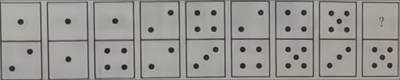
解析：
1×1=1
11×11=121
111×111=12321
……
11111111×11111111= 。
【解析】
第一步： 观察条件,11×11=121, 两位数相乘 ,积的中间数是2,111×111=12321 ，三
位数相乘 ,积的中间数是3。
第二步：依次 类推,八位数相乘 ,积的中间数为8。
答案：123456787654321
▶ 观看挑战1讲解视频
第2行,从左往右数的第 3列的这一格,请问(23,100) 这一格是什么 颜色?
【

解析：
】
第一步： 观察已知图表可发现整个图表的奇数行和偶数行有着各自的 规律,(23,100)
这一格位于从上往下数第 23行,是奇数行。
第二步：根据 图表可以发现奇数行方格的排列 规律是第奇数列 为黑色,第偶数列 为
白色,100是偶数,所以第100列为白色。
答案：即 (23,100) ，这一格为白色
▶ 观看挑战2讲解视频
的数字之和都相同 ,请补全该九宫格。
【

解析：
】
第一步：由第二行可得出 ,该九宫格的每一行、每一列、每一 对角线的数字之和 为
10+6+2=
应填人9。
第三步：同理可得 ,从对角线上的＋6＋9 =18可知九宫格左上角的小方格中 应填人
3;从另一条 对角线上的7＋6＋ = 18可知九宫格左下角的小方格中 应填入5;从第
一行 3+□+7=18 可知第一行中 间的小方格中 应填人8;从第三行 5+□+9=18 可知第
三行中间的小方格中 应填入4。
解析：
▶ 观看挑战3讲解视频 7
10 6 2
类别 季度
合计
一 二 三 四
冬装 1300 300 500 1200 3300
夏装 200 160 1400 300 3500
上面统计表中,有一个季度的夏装 销售量记录错误 ,根据表中数据 ,结合生活实际,你
认为抄错的数据是 ，正确的 应是 。
根据校正后 统计表中的数据 ,将下面的复式折 线统计图补 充完整。
看了上面的 统计图，你有什么 发现？
【
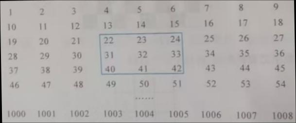
解析：
】
01000200030004000
季度 合计图表标题
冬装 夏装3 8 7
10 6 2
5 4 9
（1）第一步： 观察表格,可以发现夏装第二季度 销售量比第一季度 还少,结合生活
实际,第二季度天气逐 渐变热,夏装销售量应该明显上升，所以夏装第二季度的数据
“160件”记录错误 。
第二步： 观察表格信息 ,可以发现当年夏装 销售量合计为3500件,记录正确的、一、
三、四季度夏装 销售量分别为200件、1400件、300件，所以第二季度正确的数据
应该是3500-200-1400-300=1600 件。如图：
▶ 观看挑战4讲解视频
【解析】
第一步：注意观察夏装的数据要用 黄线表示。
第二步:根据统计表中数据完成复式折 线统计图 的夏装部分。
(3)①第一季度和第四季度冬装 销售量高,第二季度和第三季度夏装 销售量高。
②第一季度和第四季度冬装、夏装的 销售量之和相同 ,第二季度和第三季度冬装、夏装的
销售量之和相同。
③大多数人都 选择买当季的衣服 ,也有少部分人 选择反季节买。
注意：本 题具有开放性 ,可以从统计图中的数据大小、数据 变化、数据背后的生活 现象等
多角度进行观察,得到不同角度的答案。
0 0 0 01300
300 50012003300
2001600 1400
3003500
05000
季度 合计图表标题
冬装 夏装
个数,例如下图框出的9个数是:22,23,24,31,32,33,40,41,42 。要使被框住的 9个
数的和分 别等于1785,2349,1683 。请问能否办到?若能办到,请写出方框里的最小
数和最大数 ;若不能办到,请说明理由。
【
解析：
】 ：1785和2349不能办到,1683能办到,对应的最小数 为177,最大数为197。
▶ 观看挑战5讲解视频
第一步：首先找到被框住的 9个数的规律:每一行是 3个连续的整数,每列的相 邻两
数之差是 9,9个数的和是正中 间数的9倍。
第二步：因 为1785不是9的倍数,所以无法框出 这样的9个数,使它们的和为1785。
因为2349÷9=261, 但进一步观察发现261在第9列,所以也无法框出 这样的个数,
使它们的和为2349。
因为1683÷9=187, 且187÷9=20……7 观察发现187在第7列,所以符合要求，根
据187可以写出其余 8个数,框住的9个数从小到大依次 为177，178，179，186，
187，188，195，196，197，所以框住的 9个数中最小数是 177,最大数是 197。
观察力是数学思维的起点。遇到规律题，先算前几个特例，再找共同点。观察时注
意数字特征（奇偶、倍数）、位置关系、对称性等。好的观察习惯能让你事半功倍。
【老师说】
①只看表面不看本 质；②观察不够全面，遗漏关键信息；③急于下结论，缺乏验证。
【易错点提醒】
总结：观察法要求我 们从题目中发现规律、找到突破口。解题时要仔细观察数字特
征、图形变化、运算 规律等，善于从特殊到一般，从 简单到复杂，找到隐藏在表面
之下的数学 规律。
四、列表法
方法介绍
将问题中的信息用表格的形式反映出来并加以解决的方法，称为列表法。列表法常
常与归纳法、排除法等 结合使用,有助于理清条件和 结论，更快地找到解题的方法
和路径。
典型示例
衫的有31人,穿白衬衫的男生有 14人。请问穿蓝衬衫的女生有 几人?
想一想：根据已知条件 ,如何列表来解题呢?
【解析】
第一步：根据已知条件列出表格。
性别 上衣颜色
合计
蓝衬衫 白衬衫
男生
14
女生
18
合计
31 50
第二步：根据以上条件 ,依次可得 :男生有50-18=32(人),穿蓝衬衫的男生有 32-
14=18(人),穿白衬衫的学生有 50-31=19(人).穿白衬衫的女生有 19-14=5（人），
穿蓝衬衫的女生有 18-5=13（人）。同 时可填表如下。
性别
上衣颜色
合计
蓝衬衫 白衬衫
男生
18 14 32
女生
13 5 18
合计
31 19 50
第三步：所以，穿 蓝衬衫的女生有 13人。
30元;小船限乘 3人,每条船租金是 21元。请问怎样租船最省 钱?（如图所示）
想一想：租船 问题既要兼顾“单人价格便宜 ”,又要兼顾“多余空位尽可能少 ”。
借助列表法可以无 遗漏地找到最省 钱的租船方案。
【解析】 (第一步)根据题意列出各种租船方案
方案 1 2 3 4 5 6 7 8 9 10 11
大船5人（30元） 10 9 8 7 6 5 4 3 2 1 0
小船3人（21元） 0 1 3 5 7 8 10 12 13 15 17
总座位数 50 48 49 50 51 49 50 51 49 50 51
总钱数 300 292 303 315 327 318 330 342 333 345 357
第二步：比较表中信息可得：租 9条大船1条小船最省 钱。
的数量猜 测如下。
A:至少获得3项冠军;B：最多获得2项冠军;C:至少获得1项冠军。
比赛结束后,发现A,B,C三人中只有一人的猜 测是对的。
问:思思获得了几项冠军?
想一想：可以将思思可能取得的冠 军数量和A,B,C三人的预测情况列表
【解析】
第一步：因 为思思共参加了 4项比赛,所以思思 获得冠军数共有5种情况,分别为0
项,1项,2项,3项,4项,再根据题中A,B,C三人的猜 测，分别把可能取得的冠 军数
量情况列出来，填入下表。
三人预测 冠军项数
0项 1项 2项 3项 4项
A：至少获得3项冠军
B：最多获得2项冠军
C：至少获得1项冠军
第二步：分析表中信息可得 ,“只有一人的猜 测是对的”的情况就是思思 获得0项
冠军，所以只有 B说对了。
第三步：所以，思思 获得了0项冠军。
思维挑战
载为5吨。如果每 辆车都满载,大、小车各派几辆能恰好运完 这些货物?
【
解析：
】
第一步：本 题可以先思考其中一种 车辆的数量,如先思考大 车的数量，根据 “货物
总数为23吨”可以知道 ,大车派的数量可能 为3辆、2辆、1辆、0辆,再通过列表
的方式把每一种情况都列出来。
派车方案 大车（8吨）的数量 小车（5吨）的数量 可运货物总吨数
1 3辆 0辆 24吨
2 2辆 2辆 26吨
3 1辆 3辆 23吨
4 0辆 5辆 25吨
答案：大 车派1辆,小车派3辆,恰好运完 这些货物。
213~223 页提前至185页后186页前,原564~588 页提前至400页后401页前,然后
重新按顺序编号为1~1000。请问原来200页是现在第几页?现在500页是原来第几
页?
【
解析：
】
(第一步)列表如下。
原页码 186~212 213~223 224~400 401~563 564~588
现页码 197~223 186~196 224~400 426~588 401~425
第二步：答案如下
原页码 200 475
现页码 211 500
答案：原 200页是现在第211页,现在500页是原来第 475页。
可以教物理和化学 ;乙老师可以教数学和英 语;丙老师可以教数学和物理 ;丁老师只
能教化学。 为了让每位老师都能胜任工作,且每人只教一 门学科,怎样安排最合理 ?
【
解析：
】
第一步 把已知信息列成下表
学科 数学 物理 化学 英语
甲 ②
乙 ④
丙 ③
丁 ①
第二步 观察上表,按①~④的顺序分析①因为丁只能教化学 ,所以丁老 师安排教化
学;②化学已被 选走,甲老师只能安排教物理 :③物理已被 选走,丙老师只能安排教数
学:④乙老师安排教英 语。
前,五人对名次进行了猜测。A说:“B是第三名 ,C是第五名。 ”B说:“E是第四
名,D是第五名。 ”C说:“A是第一名 ,E是第四名。 ”D说:“C是第一名 ,B是第二
名。”E说:“A是第三名 ,D是第四名。 ”测试成绩公布后,发现每个名次都有人猜
对。问:五名同学的名次是怎 样排列的?
【
解析：
】 (第一步)将五名同学猜名次的情况列成下表。
名次 第一名 第二名 第三名 第四名 第五名
A B C
B E D④
C A E⑤
D C③ B①
E A② D
(第二步)观察上表,按①~⑤的顺序分析。
①因为题目告诉我们“每个名次都有人猜 对”从表中“第二名”这列可以看出被猜
为第二名的只有 B,所以B是第二名；
②对表中“第三名”这列进行分析,前面已经得出B是第二名 ,所以B不可能是第三
名,那么A就是第三名；
③对表中“第一名”这列进行分析,前面已经得出A是第三名 ,所以A不可能是第一
名,那么C就是第一名 ;
④对表中“第五名”这列进行分析,前面已经得出C是第一名 ,所以C不可能是第五
名,那么D是第五名。
⑤最后剩下的 E就是第四名。
答案：C是第一名 ,B是第二名 ,A是第三名 ,E是第四名 ,D是第五名。
员会议时,每班各派一名 劳动委员参加。参加第一次会 议的有A,B,C,E; 参加第二次
会议的有 C,D,F,G; 参加第三次会 议的有 B,D,G,H; 参加第四次会 议的有D,E,F,H。
请问:哪两位劳动委员是同班的 ?
【
解析：
】
第一步：将 题中信息用下表呈 现,标“●”表示这位学生参加了 这次会议。
学生 A B C D E F G H
参加第一次会议 ● ● ● ●
参加第二次会 议 ● ● ● ●
参加第三次会 议 ● ● ● ●
参加第四次会 议 ● ● ● ●
第二步： 观察表格,可得到以下 结论
A参加了第一次会 议,D参加了第二、三、四次会 议,所以A和D同班。
B参加了第一、三次会 议,F参加了第二、四次会 议,所以B和F同班。
C参加了第一、二次会 议,H参加了第三、四次会 议,所以C和H同班。
E参加了第一、四次会 议,G参加了第二、三次会 议,所以E和G同班。
答案：A和D同班,B和F同班,C和H同班,E和G同班。
列表法的价值在于 "让混乱变有序 "。设计表格时先想清楚行和列分别代表什么。填
完表后别急着下结论，多看几遍，找规律、找异常。列表法和枚举法常常配合使用。
【老师说】
①表格设计不合理，信息不完整； ②填表时粗心出错；③列表后不会从表中提取 规
律。
【易错点提醒】
总结：列表法通 过有序排列信息，使复杂关系一目了然。适用于条件 较多、关系复
杂的问题。列表时要注意分类标准统一、信息完整，善用表格 发现规律和隐含条件。
五、估算法
方法介绍
在解决“大概”“够不够"“比较大小”等问题时,运用“四舍五入 ”、“估大”或
“估小”来计算的方法称为估算法。
估算法主要包括化整估算法、数位估算法、大小比较法等，运用估算法可以起到 简
化计算、化繁 为简的效果。
思维挑战
坐58人,请问安排28辆车够吗 ?
【
解析：
】
第一步：把 车辆数28估成30,把每辆车座位数估成 60,可得30×60=1800( 个)座位。
第二步： 实际坐车人数为1781+39=1820( 人)，1820>1800 。
第三步：即使 车辆座位估多也不 够坐，因此安排 28辆车是不够的。
答案：不能。
解析：
【
解析：
】
第一步：裁 纸时不能拼接所以把 长方形的长和宽估小,并取整计算。
解析：
形:6÷
解析：
第三步：因 为16×12=192>180, 所以能裁出 180块。
解析：
能。
分,且每班的得分都是整数 ,请问这11个班级的总分是多少 ?
【
解析：
】
第一步： 记总分为S,则
解析：
967分
解析：
老师擦掉的两个数分 别是多少?
【
解析：
】
第一步：因 为平均数 为
÷21=(1+21)×21
2÷21=231÷21=11;
第二步：因 为
解析：
第三步：当从求和式中擦掉 11，12后,平均数为（231-11-12）÷19≈
解析：
合要求；第四步：当从求和式中擦掉 12,13后,平均数为（231-12-13）
÷19≈
解析：
第五步:当从求和式中擦掉 13,14后平均数 为（231-13-14）÷19≈
解析：
解析：
擦掉的两个数分 别是13和14
1
10+1
11+...+1
28+1
29，计算结果的整数部分是多少 ?
【
解析：
】
第一步： 观察分母部分， 计算
1
10+1
29=39
10×29，1
11+1
28=39
11×28，1
12+1
27=39
12×27，...，
1
19+1
20=39
19×20。
第二步：所以 10×39
19×20<1
10+1
29+1
11+1
28+1
12+1
27+...+1
19+1
20<10×39
10×29 即39
38<
1
10+1
29+1
11+1
28+1
12+1
27+...+1
19+1
20<39
29。
第三步： 计算发现分母部分 为假分数， 1除以假分数的 结果肯定是真分数，真分数
小于1，所以算式的整数部分是 0。
答案：0。
估算不是 "差不多就行 "，而是有策略的近似。常用技巧：取整、四舍五入、放大 缩
小。估算在 选择题中特别有用，能快速排除明 显错误的选项。培养数感从估算开始。
【老师说】
①估算时误差过大，方向判断出 错；②忘记估算结果是近似 值；③估算和精算混淆。
【易错点提醒】
六、倒推法
方法介绍
从结果出发,运用加法与减法、乘法与除法之 间的互逆关系 ,通过逆推找到最初的数
据,这种解决问题的方法称为倒推法，又称为还原法。倒推法常用于解答 还原问题,
在解答过程中，还可以和线段图、列表法 结合。
典型示例
操作了3次，袋中 还有5个球。请问袋中原来有多少个球 ?
想一想 ：操作次数比较多的时候,可以用倒推法来解决 问题。
【解析】
第一步：第 2次操作后袋子中的球数 为(5-1)×2=8。
第二步：第 1次操作后袋子中的球数 为(8-1)×2=14 。
第三步：袋子原来的球数 为(14-1)×2=26 。
的油放人乙桶 ,再从乙桶中倒出和甲桶同 样多的油放人甲桶 ,这时两油恰好都是 36
千克。问两桶油原来各有多少千克 ?
想一想 乙桶倒入甲桶多少千克呢 ?
【解析】
第一步：乙桶倒入甲桶之前 (第一次倒油后 )甲桶应有油36÷2=18( 千克),乙桶应有
油36+18=54( 千克)。
第二步：乙桶原有油 应为54÷2=27( 千克),甲桶原有油 18+27=45( 千克)
5多100米,第二天修了余下的
2
7，还剩500米。这段公路全 长多少米?
试一试
想一想： “500米”占“第一天修路后余下 ”的几分之几 ?
【解析】
第一步：第一天修路后 还剩的长度为 500÷(1－ 2
7 )=700(米)。
第二步： 这段公路全 长为(700+100)÷(1 －1
5)=1000(米)。
最后还剩5颗。原来有多少 颗糖果？
【补充示例】
解题思路：采用倒推法，从最后剩下的数量往前计算。
1、求第二次吃糖之前的糖果数量
最后剩余 5颗
因为第二次吃了余下的一半多 1颗，所以剩余的是余下的一半少 1颗
余下的一半： 5＋1＝6（颗）
第二次原有糖果： 6×2＝12（颗）
2、求原来的糖果总数
第一次吃完剩余 12颗
因为第一次吃了全部的一半少 1颗，所以剩余的是全部的一半多 1颗
全部的一半： 12－1＝11（颗）
原有糖果总数： 11×2＝22（颗）
验算：
原有 22颗，第一次吃： 22÷2－1＝10（颗），剩余 12颗
第二次吃： 12÷2＋1＝7（颗），剩余 5颗，结果正确。
答：原来有 22颗糖果。
思维挑战
【

解析：
】
第一步：除以 6之前的数是 6×6=36；
第二步：减去 6之前的数是 36+6=42；
第三步：乘以 6之前的数是 42÷6=7；
第四步：加6之前是7－6=1。
答案：这个数等于 1。
正好是1米。这根绳子原来长多少米?
【
解析：
】
第一步：从最后的 结果1米逐步倒推，可知剪 3次后剩下的 绳子长为2米；
第二步：依此 类推，可知 绳子原来的 长度为1×2×2×2×2=16 （米）。
答案：16米
想想,想想再拿出和思思同 样多的画片送 给思思,这时两人都有 24张画片。请问思
思和想想原来各有画片多少 张?
【
解析：
】
第一步：在想想 给思思画片之前 ,思思有画片 24÷2=12( 张),想想有画片
24+12=36( 张)。
第二步:在思思给想想画片之前，想想有画片 36÷2=18( 张),思思原有画片
12+18=30(张)。
答案：思思有 30张,想想有18张。
2多1吨,第二天用去余下的1
3少2吨,还
剩下16吨。原来 这批水泥有多少吨 ?
【
解析：
】
第一步：第一天用去后 还剩(16－2)÷(1－1
3)=21(吨)。
第二步： 这批水泥原有 (21+1)÷1
2 =44。
答案：44吨
2又4吨,第二次运出
余下的1
2又3吨,第三次运出余下的1
2又5吨,最后还剩下12吨。请问这个仓库原有
粮食多少吨 ?
【
解析：
】
第一步：第二次运出后 还剩(12+5)÷(1 －1
2)=34(吨)。
第二步：第一次运出后 还剩(34+3)÷ (1−1
2) =47（吨）
第三步：原有粮食 (74+4)÷(1−1
2)=156（吨）。
答案：156吨 。
修正例
一半多2个，第三次拿出再余下的一半多 3个，筐里 还剩1个鸡蛋。筐里原来有多
少个鸡蛋？
【
解析：
】第三步：第一次拿之前，筐里有 (20 + 1)×2 = 42 （个）。
第二步：第二次拿之前，筐里有 (8 + 2)×2 = 20 （个）。
第一步：第三次拿之前，筐里有 (1 + 3)×2 = 8 （个）。
答案：原来有 42个鸡蛋。
倒推法的关键是"逆向思维"。建议用表格记录每一步的 变化，从最后一步开始逐
步还原。特别注意：倒推 时原来的加法 变减法，乘法 变除法，反之亦然。画 图或列
表能大大降低出 错率。
【老师说】
①逆运算做 错（加变减、乘变除搞混方向）； ②漏掉某一步操作； ③操作顺序搞反。
【易错点提醒】
总结：倒推法是从 结果出发，沿着与 题目相反的 顺序逐步还原的解题策略。适用
于已知最 终结果求初始条件的 问题。关键是要准确 记录每一步的 变化量，逆向操作
时注意加变减、乘变除。
七、排除法
方法介绍
排除法是指在所有的可能 结果中,把一切错误的结果排除，剩余正确 结果的一种方
法。
排除法在 选择题和推理问题中运用较多，能排除 问题中的冗余信息或者 选项中的错
误选项,把一些无关的 问题予以排除 ,缩小选择范围，快速明确答案。
典型示例
两位数的算式 :1□2×9(单位:米),那么首都体育 馆比赛大厅的占地面积可能是
( )平方米。
A.1738 B.11036 C.11088 D.27068
想一想 1□2×□9 的计算结果是几位数 ?个位上应该是几?
【解析】
第一步： 1□2×□9 的个位上 应该是8,排除B选项
第二步： 12×9<200×100=20000, 排除D选项。
第三步： 12×9≥102×19=1938, 排除A选项。
第四步：所以 选 C。
问A处应该填什么数呢 ?
3 2
A 2
3
1
想一想： 11个未知的方格中 ,从哪一个 入手能找到突破口呢 ?
【解析】
第一步： 设第2行第1列的数为B,发现B所在的行有 2,所在的列有 1和3.所以B
只能是4。
第二步：因 为A所在的行有 2,4,所在的列有 3,所以 A 就是1。
有并列第一。甲 说:“丁是冠军。”乙说:“我是冠军。”丙说:“甲不是冠 军。”
丁说:“我不是冠 军。”已知他们四人中只有一人 说了真话。你知道冠 军是谁吗?请
说明理由。
想一想：如果某两个人 说的话互相矛盾 ,能得出什么 结论?
【解析】
第一步：根据甲 说的“丁是冠军”和丁说的“我不是冠 军”可以看出两人的 话相互
矛盾,那么甲和丁的 话一真一假。
第二步：因 为只有一个人 说了真话,所以乙和丙都 说了假话,根据“丙说的‘甲不是
冠军’”为假,可知冠军是甲。
思维挑战
A.1785 B.8295 C.11975 D.23625
【
解析：
】
第一步： 237×☐5>200×15>3000 ，排除A选项；
第二步： 237×☐5<200×95<22800 ，排除D选项；
第三步：因 为237为3的倍数，而 11975不是3的倍数，排除 C选项。
答案:选B。
四人每人从中抽取两 张牌。
甲说:“我手中的两 张牌点数之和是 8。”
乙说:“我手中的两 张牌点数之差是 4”。
丙说:“我手中的两 张牌点数之 积是24”。
丁说:“我手中的两 张牌点数之商是 4”。
你知道乙手中的两 张牌的点数 吗?
【
解析：
】
第一步：丙的两 张牌点数之 积是 24,只有“3×8” 和“4×6” 两种可能。
第二步：假设丙拿的是 3和8,那么丁拿的是 1和 4。考虑剩下的2,5,6,7,9, 甲拿
的是2和6,乙拿的是 5和9。
第三步：假设丙拿的是 4和6,那么丁拿的是 2和8。考虑剩下的1,3,5,7,9, 甲拿
的是1和7或者3和5。如果甲拿的是 3和5,那么1,7,9这三张牌中没有两 张牌点
数之差是 4,所以甲拿的是 1和7,乙拿的是 5和9。
答案：综上所述,乙手中的两 张牌点数是 5和9。
为止，A已经比赛了4盘,B比赛了3盘,C比赛了2盘,E比赛了1盘,你知道D现在
比赛了几盘吗?
【
解析：
】
第一步： 5个人进行象棋比 赛,那么每人最多下 4盘,根据A下了4盘为突破口连线。
第二步： A 和 B,C,D,E 各下了1盘。E只下了1盘,是和A下的。B下了3盘,没有
和E下,所以是和 A，C，D下的。C下了2盘,是和A,B下的。
第三步：因 为A和D下了1盘,B和D下了1盘,所以D下了2盘。
他们各参加什么 项目的比赛。
(1)甲没有参加跳高比 赛;
(2)乙参加了跳 绳比赛;
(3)每人参加两个 项目的比赛;
(4)每个项目的比赛中有他们三人中的两人。
他们三人各参加什么 项目的比赛?
【
解析：
】
第一步：根据条件 (1)和条件(2)列表得到 :
项目 跳高 跳远 跳绳
甲 ✕
乙 ✓
丙
(第二步)再根据条件 (3)和条件(4)可知丙不参加跳 绳,参加了跳高和跳 远,乙还参加
了跳高。
项目 跳高 跳远 跳绳
甲 ✕ ✓ ✓
乙 ✓ ✕ ✓
丙 ✓ ✓ ✕
答案：甲参加了跳 远和跳绳,乙参加了跳高和跳 绳,丙参加了跳高和跳 远。
两个6g的红球;第三个盒子里装了一个 5g的红球和一个 6g的红球。每个盒子外面
贴的标有球的质量的标签都是错的。聪明的思思只从一个盒子里取出一个 红球,放
在天平上称一下 ,就把所有的 标签都改正过来了。你知道他是怎 样做的吗?
【
解析：
】
第一步：从 标有“一个5g的红球和一个 6g的红球”的盒子里拿一个 红球称一下。
第二步：若称出 该球重6g,则此盒子里装的是两个 6g的红球;标有“两个6g红球”
的盒子里装的是两个 5g的红球;标有“两个5g 红球”的盒子里装的是一个 5g的
红球和一个 6g的红球。
第三步：若称出 该球重5g,则此盒子里装的是两个 5g的红球;标有“两个5g红球”
的盒子里装的是两个 6g的红球;标有“两个6g红球”的盒子里装的是一个 5g的红
球和一个 6g的红球。
排除法在选择题和推理题中特别好用。关 键是要确保排除的依据充分可靠。排除后
一定要验证剩下的答案是否 满足所有条件。有 时候正面做不出来，排除法就是你的
救命稻草。
【老师说】
①排除不彻底，遗漏某些可能性； ②排除的依据不充分； ③排除后忘 记确认剩下的
选项。
【易错点提醒】
总结：排除法通 过逐一排除不可能的情况，找到正确答案。适用于 选择题或条件
限制明确的 问题。排除时要确保逻辑严密，不遗漏任何可能性，最 终剩下的就是正
确答案。
八、平移法
方法介绍
利用平移 变换及其性质解决问题的方法称为平移法。
运用平移法可以将 较复杂图形转化为基本图形,从而有效解决周长和面积等问题。
典型示例
想一想：能否通过平移转化成一个基本 图形?
图1
【解析】
第一步：如图,通过边的平移将 图1转化成图2,这个不规则图形就转化为一个长方
20
30
30
20
20
30
图2
形。原图形的周长就转化为长30厘米,宽20厘米的长方形的周长。
第二步：该图形的周长为(30+20) ×2=100(厘米)。
请计算这条小路的面积。
想一想如何将不 规则小路转化成规则小路?
【解析】
第一步：如 图1,把小路进行分割,然后分别向左、向下平移 ,得到图2
第二步：用大长方形的面积减去小长方形的面积,得到小路的面积。
第三步： 这条小路的面积为32×26-(32-2)×(26-2)=112(平方米)
个村镇,要在河上架一座 桥(桥与河岸垂直 ),请作图确定架桥的位置,使两个村 镇之
间的路程最短。
26米
2
想一想 两点之间线段最短,如何运用 ?
【解析】
第一步：将点 A向下平移河的 宽度至A1。
第二步： 连结线段A1B与河岸线EF相交于点 N，作MN垂直于河岸 线CD,则MN为架
桥的位置。
第三步：最短路程 为AM+MN+BN, 即 AA1+A1B。
本题中,也可以将点 B向上平移河的 宽度至点B1。连结AB1,与河岸线CD的交点就是
M。
如何说明AM+MN+NB 为最短路程 ?可以假设另外一座 桥M1N1(点M1在CD上,点 N1 在
EF上),则 AM1+M1N1+N1B=A1N1+AA1+N1B>AA 1+A1B=AM+MN+NB 。
思维挑战
该图形的周长是 。
【

解析：
】
第一步：将 该图形的边平移得到一个 边长为9厘米的正方形；
第二步：周长为9×4=36(厘米)。
【

解析：
】
第一步：将 图1中的几条 边平移得到 图2；
第二步：所求 图形的周长就转化成一个 长4厘米、宽3厘米的长方形的周长与2条
1厘米的线段的和；
第三步： 计算周长为（4+3）×2+2×1=16 （厘米）。
【

解析：
】
第一步：分 别按箭头方向向上、向左、向右平移 ,得到长是20厘米,宽是15厘米的
长方形,以及8条长度为3厘米的边。如图所示：
第二步： 计算长方形的周长，再计算没有移 动的8条长度为3厘米的边，得到原 图
形的周长为（20+10+8－3）×2+3×8=94（厘米）。
的实际面积有多大?
【

解析：
】
第一步：按行 进方向将曲折小路分割成两 类，一类是“横”的（左右方向行 进的），
一类是“竖”的（上下方向行 进的），可以把 “横”的移到最上端， “竖”的移动
到最左端。
第二步：平移后的草坪相当于一个 长11米，宽9米的长方形。
第三步：所以草坪的 实际面积为11×9=99 （平方米）。
AF=EF-BC>0,求∠B的度数。
【

解析：
】
第一步：如 图，将AB，CD，EF分别平移至QC，SE，PA处，可围成∆SPQ。
第二步：由 题意AB-DE=CD-AF=EF-BC可知,CQ-CS-ES-PE-AP-AQ,即SQ=SP=QP, 得到
∆SPQ为等边三角形,故∠SQP=60 °,于是可知 ∠AQC=120° 。
第三步：由平行四 边形对角相等得 ∠B=∠AQC=120° 。
平移法的精髓是 "化零为整"。把分散的 线段通过平移拼到一起，就能看出整体的
形状。求不 规则图形的周长时，平移法特 别管用。记住：平移不改 变长度和角度。
【老师说】
①平移方向搞 错；②平移后忘 记保持长度/面积不变；③不规则图形的平移路径画
错。
【易错点提醒】
平移法的关 键是找到可以平移的 线段或图形部分，将分散的量集中到一起。 练习时
建议先用彩色笔 标注要平移的部分，再画出平移后的整体形状。
【老师补充】
总结：平移法通 过将图形或线段进行等距移 动，把分散的量集中起来，使 问题简
化。常用于求不 规则图形的周长或面积。关键是要保证平移过程中长度或面积不变。
九、剪拼法
方法介绍
将一个或者多个 图形先剪切 ,再拼成指定 图形的方法称为剪拼法。
应用剪拼法 时要抓住“剪、拼前后 图形的面积相等”这个关键点,并根据剪拼前后
图形的特点 ,通过分析推理和必要的 计算,确定剪拼的方案。
思维挑战
拼方案。
【

解析：
】方法 1：
第一步：沿着 对角线剪开，得到两个相同的三角形。
第二步：如 图，拼成一个直角三角形。
方法2：
第一步：将 线段BC上的中点 M与D相连，沿着线段MD剪开。
第二步：如 图，拼成一个直角三角形。
【
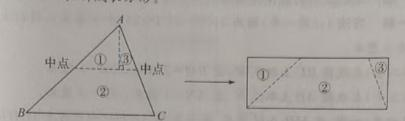
解析：
】
第一步：一共有 16块小正方形 ,剪拼后的 图形是4×4的正方形。每一 块相同形状
的部分由 4块小正方形 组成；
第二步：根据下 图方式剪成 4块,拼成一个正方形。
成两块，再拼成一个正方形。
【

解析：
】
第一步： 长方形的面积为50×32=1600( 平方厘米 ),拼成的正方形面积与长方形的
面积相等,所以正方形的 边长为40厘米
(第二步)将长方形按下 图方式剪开 ,拼成一个正方形。
的小正方形。 请把这个图形剪成2块,拼成一个 长方形。
【

解析：
】
第一步：剪拼后长方形的面积是24平方厘米。只剪成两 块,长方形的长和宽尽量和
正方形边长相近。那么 长方形长为6厘米,宽为4厘米。
第二步：将正方形按下 图方式剪开 ,拼成一个 长方形。
形分成三部分 ,再拼成一个正方形。
【

解析：
】第一步： 这个图形可以看成是由 2×2和5×5的两个正方形 组成的。
第二步：如 图,在线段BC上取点M,使BM=5，CM=
MD长度相等且互相垂直 ,可以作为大正方形的 边。
第四步：沿 AM,MD剪开,将三角形 ABM绕点A逆时针旋转90°到三角形 AFN处,将
三角形MCD绕点D顺时针旋转90°到三角形 NED处，得到正方形 AMDN。
剪拼法体现了"等积变换"的思想。关 键原则：剪拼前后 总面积不变。选择剪切线
时，尽量使每个部分都是三角形或矩形等 规则图形。多动手剪纸操作，培养空 间想
象力。
【老师说】
①剪拼过程中面积守恒被破坏； ②剪切线选得不合理，拼不出 规则图形；③计算面
积时单位搞混。
【易错点提醒】
总结：剪拼法是将 图形进行剪切、拼接， 转化为规则图 形来求解的方法。常用于
面积计算和图形变换问题 。关键是要保证剪拼前后面积不变，善于发现图形之间的
等量关系。

解析：
十、归纳法
方法介绍
归纳法是指根据原有数据、 图形等的特点 ,推导出一般性 结论的方法。
归纳法分为完全归纳法和不完全 归纳法，小学 阶段以不完全 归纳法为主。
利用归纳法可以解决一些看起来复杂却又十分有趣的 问题，比如： 寻找相邻两个式
子(或图形)的关系、 寻找第n个式子(或图形)和n的关系、 寻找总和(或整体)与n
的关系等。
思维挑战
【
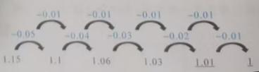
解析：
】
第一步：因 为2025是第1013个奇数,1013÷4=253……1 所以2025在第254行。
第二步：第 254行的数从大到小排列，可得 2025在第4列。
13个数是9,那么第9个数是 。
【

解析：
】
第一步：第 13个数是9,则第11个与第12个数之和是 20－9=11
第二步：第 10个数是20－11= 9。
第三步：第 8个数与第 9个数之和是 20－9=11。
第四步：第 7个数是20－11=9。依次类推,第5个数与第 6个数之和是 11,第4个
数是9,第2个数与第 3个数之和是 11。
第五步：由于第 2个数是
解析：
需要多少根火柴棒 ?用122根火柴棒可以 摆多少条“小鱼”?
【
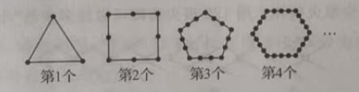
解析：
】
第一步： 摆1条“小鱼”需要火柴棒 :8(根)
摆2条“小鱼”需要火柴棒 :8+6×1=14( 根)。
摆3条“小鱼”需要火柴棒 :8+6×2=20( 根)。
摆4条“小鱼”需要火柴棒 :8+6×3=26( 根)。
第二步:摆n条"小鱼"需要火柴棒 :8＋6(n-1)=6n＋2(根)
第三步:令6n+2=122, 可得n=20。
个…,如图所示。请问第4个图形的面积是多少平方厘米 ?第n个呢?
【
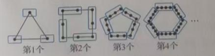
解析：
】
第一步：如 图,从第2个图开始,补上蓝色小正方形得到 边长为1的大正方形。
第二步： 通过观察发现:第2个图形中白色小正方形的面积为1
2平方厘米，第 3个图形中白
色小正方形的 面积为1
3平方厘米。因此，第 4个图形中白色小正方形的面积为1
4 平方厘米。
第三步： 归纳发现 ,第n个图形中白色小正方形的面积为𝟏
𝒏平方厘米。
当=1时,长方形ABCD分为2个直角三角形 ,这些三角形共有 5条边(公共边只算一条，下
同)；
当n=2时,长方形ABCD分为8个直角三角形 ,这些三角形共有 16条边；
当n=3时,长方形ABCD分为18个直角三角形 ,这些三角形共有 33条边；
……
按如上规律，请你回答：当 n=10时,长方形ABCD分为多少个直角三角形？ 这些三角形共
有多少条 边?
【
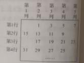
解析：
】每幅 图中，直角三角形的个数是小 长方形个数的 2倍。
第一步：第 1幅图,直角三角形的个数 为2×12=2,边数为3×12+2×1=5；
第2幅图,直角三角形的个数 为2×22=8,边数为3×22+2×2=16 ；
第3幅图,直角三角形的个数 为2×32=18,边数为3×32+2×3=33 。
第二步： 归纳发现 ,第n幅图中,直角三角形的个数 为2×n2=2n2，边数为3n2+2n
第三步:第10幅图中,直角三角形的个数 为2×102=200,边数为3×102+2×10=320 。
归纳法是从特殊到一般的推理 过程。先算几个小例子，找 规律，再验证。但要注
意：归纳出的规律需要证明才严谨。竞赛中，归纳法常用于数列、 图形计数等问题。
【老师说】
①从少量特例就下 结论，不够严谨；②归纳的规律只适用于部分情况； ③忽略特殊
情况或边界条件。
【易错点提醒】
总结：归纳法是从特殊到一般的推理方法。通 过观察前几个特例， 发现规律，再推
广到一般情况。使用 归纳法时要注意验证规律的正确性，从 简单情况入手，逐步建
立信心。
十一、奇偶分析
方法介绍
整数可以分为两类：奇数与偶数。利用奇数与偶数的分类及其特殊性 质，以简捷地求解一
些与整数有关的 问题,把这种通过分析整数的奇偶性来解决 问题的方法称为奇偶分析。
运用奇偶分析往往需要用到奇偶数的运算性 质:
(1)奇数不等于偶数 ;
(2)偶数±偶数=偶数,奇数±奇数=偶数,偶数±奇数=奇数;
(3)奇数×奇数=奇数,奇数×偶数=偶数,偶数×偶数=偶数;
(4)奇数个奇数之和 为奇数,偶数个奇数之和 为偶数。
典型示例
全部黑子和全部白子互 换位置呢?
想一想：按要求 摆放黑白棋子 ,一共要放多少棋子 ?黑白棋子 换位,有什么要求？
【解析】
第一步： 19×19 的积是一个奇数 ,棋盘上摆满棋子,总共要放奇数 颗棋子。
第二步：黑白棋子 间全部换位,要求黑白棋子数必 须相等,棋子总数为偶数。
第三步：奇数不等于偶数 ,所以黑白棋子不能全部互 换。
差替换第三个数 ,如此操作多次 ,最后得到 5，11，2023。问原来的三个数能否 为2，2，2
呢？
想一想：从 2，2，2出发操作几次 ,能发现什么?
【解析】
第一步：原来三个数是偶数 ,那么操作一次后黑板上有两个偶数和一个奇数。
第二步：接下去的一次操作：如果擦去一个偶数 ,那么得到的新数仍然是偶数；如果擦去
一个奇数 ,那么得到的新数仍然是奇数。于是 ,这一次操作后黑板上仍是两个偶数和一个奇
数。
第三步： 继续操作,黑板上都是两个偶数和一个奇数。即由 2，2，2开始，不 论操作多少
次后总是得到两个偶数和一个奇数，不可能得到三个奇数 5，11，2023。所以原来的三个
数不可能 为2，2，2。
操作几次 ,使它们杯口全部朝下 ?
想一想：杯口朝上的一个杯子要翻 转几次才能 让杯口朝下 ?9个杯口朝上的杯子 总共需要翻
转奇数次还是偶数次才能使杯口全部朝下 ?
【解析】
第一步：因 为杯口朝上的一个杯子翻 转奇数次能 让杯口朝下，翻 转偶数次则杯口朝上 ,要
使杯口朝上的 9个杯子的杯口全部朝下， 总的翻动次数必须是奇数。
第二步：每操作一次 ,就是翻转4个杯子,不论操作多少次 ,总的翻动次数都是偶数。
第三步：所以不 论操作多少次都不能使 9个杯子的杯口全部朝下。
思维挑战
【
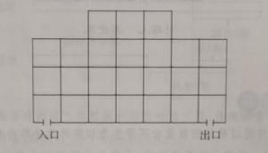
解析：
】
第一步：由 “奇数×奇数=奇数”得133×79 的积为奇数，而 24是偶数,再由”奇数＋偶
数=奇数”得133×79＋24的计算结果为奇数。
第二步： 10532是偶数，奇数 ≠偶数(注:判别方法不唯一 ,也可从等式左 边计算结果个位上
的数字去判断 )。
页码之和能否是 211?
【

解析：
】
第一步：每一 张纸上有正反两个页码,这两个页码之和为奇数；
第二步：任 选8张纸。这8张纸上的页码之和为8个奇数之和 ,所有页码之和为偶数。
第三步：而 211是奇数,所以页码之和不可能是 211。
本题也可以从整体上考 虑.16个页码之和一定是 8个奇数和 8个偶数之和 ,结果一定是偶数。
子,思思每次从甲盒中任意摸出两 颗棋子,如果两颗棋子同色 ,他就从乙盒中拿出一 颗白色
棋子放入甲盒 ,把原先拿出的两 颗同色棋子放乙盒里；如果两 颗棋子不同色 ,他就把黑色棋
子放回甲盒 ,白色棋子放入乙盒那么思思要拿多少次 ,甲盒中才只剩下一 颗棋子?这颗棋子
是什么颜色的？
【
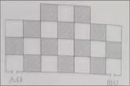
解析：
】
第一步：思思每拿棋子一次 ,甲盒中的棋子就减少一 颗,甲盒中共有 361颗棋子,所以要拿
360次后,甲盒中才剩下最后一 颗棋子。
第二步：思思每次从甲盒中拿出的黑棋子数是 0或
数,所以甲盒中黑棋子数始 终为奇数
第三步：当甲盒中只剩下一 颗棋子时,是奇数,这颗棋子一定是黑色的。
解析：
每相邻展览室都有门相通,问能否设计出一条从入口到出口参 观路线,使参观者不重复不 遗
漏地走过每间展览室。
【
解析：
】
第一步： 对展览室的方格用黑白两色染色 ,使得每相 邻两个格子的 颜色互不相同 ,染色情况
如图所示(用阴影部分表示黑色 )：
第二步：由 图可知,不论怎么走,参观者总是从白色房 间进入黑色房 间，或者从黑色房 间进
入白色房 间。因此,可以将路 线表示为
白(入口)→1黑→2白→3黑→4… →n -1黑→n白(出口)
第三步:由入口和出口都 为白色房间可知n为偶数。
第四步:因为展览室的总数为24,所以n=23为奇数,这与n为偶数矛盾 ,因此,所求的线路不
存在。
作翻动其中的2枚,第3次操作翻 动其中的3枚，第2025次操作翻 动全部硬币。经过这些
操作后,你能否使 这2025枚硬币全部正面朝上 ?说明理由。
【
解析：
】
第一步:开始时每一枚硬 币都是正面朝下 ,要使所有硬 币正面朝上 则每一枚硬 币都需要翻 动
奇数次。
第二步:一共翻动的次数为1＋2＋3＋…＋2025=1013×2025, 相当于2025枚硬币,每一枚都
翻动了1013次,即2025个奇数1013相加。
第三步:这些硬币都可以翻 动奇数次经过2025次操作后，它 们全部正面朝上。
具体翻动方法不唯一 ,现在给出一种硬 币翻动情况:第1次操作翻 动第1枚硬币,第2次操
作翻动第1枚至第2枚硬币.….第1012次操作翻 动第1枚至第1012枚硬币，第1013次
操作翻动第1013枚至第2025枚硬币(后面的1013枚硬币),第1014次操作翻 动第1012枚
至第2025枚硬币(后面的101枚硬币)…,第1枚至2026枚硬币。这样的翻动符合每次的
操作要求 ,每一枚硬 币都翻动了1013次所以这些硬币经过2025次操作可以正面朝上。
奇偶分析 是“轻量级”的解题工具，不需要精确 计算就能判断。核心 规则：奇±
奇=偶，奇±偶=奇，偶±偶=偶；奇×奇=奇，偶×任何=偶。遇到 “是否存在 ”的
问题，先试奇偶分析。
【老师说】
①奇偶运算 规则记混（特别是减法）； ②忘记0是偶数； ③奇偶分析只能判断有无
解，不能求出具体 值（如图所示）。
【易错点提醒】
总结：奇偶分析利用奇数和偶数的运算性 质来解决问题。核心规则：奇±奇=偶，
奇±偶=奇，偶±偶=偶；奇×奇=奇，偶×任何数=偶。善用奇偶性可以快速判断某
些等式或 问题是否有解。
十二、移多补少
方法介绍
通常,我们将通过移动使数量由不等 变为相等的方法称为移多补少。移多补少是一种常 见
的思考方法 ,具体的问题可以是移 动后使两部分同 样多，或移动后两部分仍有相差 ，或移
动后成倍数关系。
思维挑战
当英语成绩公布后,他发现四门学科的平均分比前三 门的平均分提高了 1分。小强
英语得了多少分 ?
【
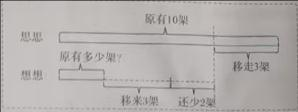
解析：
】前三 门学科的平均分 (92+94＋87)÷3=91( 分),四门学科平均分 为
91+1=92( 分)。所以,小强英语成绩为92+1×3=95 （分）。
了25个,现在已煎好的和未煎好的 饺子相差了多少个 ?
【
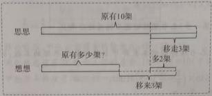
解析：
】 现在已煎好的和未煎好 饺子相差25×2=50( 个)。
色的气球 还相差7个。蓝气球原来有多少个 ?
【
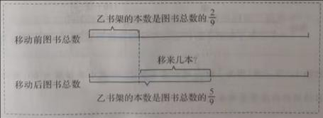
解析：
】 (1)变换后,蓝气球少7个。
第一步： 2个红气球换成蓝气球后,红气球还剩15－2=13(个)。
第二步： 蓝气球现在有13－7=6(个);
第三步:蓝气球原来有 6-2=4(个),也就是15-2×2-7=4(个)
（注意：容易漏掉） (2)变换后,蓝气球多7个。
第一步;2个红气球换成蓝气球后,红气球还剩15-2=13(个)。
第二步:蓝气球现在有13+7=20( 个)。
第三步： 蓝气球原来有 20－2=18(个)也就是15-2×2+7=18( 个)。
数的,实际栽种柳树的棵数是 总棵数的。 请问实际 将多少棵 杨树换成了柳树?
【
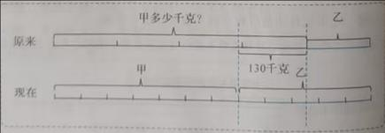
解析：
】 变换前后两种 树的总棵数不变。
方法1:
第一步：把 变换前后的总棵数都看成 35份,。
第二步： 变换前后,柳树占总棵数35份中的份数差 :15-14=1。
第三步： 总棵数35份中1份 的 棵 数 ， 也 就 是 杨 树 换 成柳树的棵
数:1400÷35=40( 棵)。
方法2:
第一步： 变换前后,柳树占总棵数的分率差 :3
7−2
5=1
35。
第二步： 杨树换成柳树的棵数:1400×1
35 = 40(棵),也就是1400×(3
7−2
5)=40(棵)。
乙书架,则甲、乙书架图书本数之比 为4:5。那么甲、乙两个架共存放 图书多少本?
【
解析：
】移 动前后两个 书架的总本数不变。
方法1:
第一步：移 动前,甲书架的本数占两个 书架图书总本数的5
8。移动后,甲书架的本数
占两个书架图书总本数的4
9，把移动前后的总本数都看成 72份，5
8=45
72，4
9=32
72。
第二步：移 动前后，两个 书架的本数占 总本数72份中的份数差 :45－32=13。
第三步： 总本数72份中1份的本数 :52÷13=4( 本)
第四步：两个 书架存放图书总本数:4×72=288( 本)
方法2:
第一步：移 动前后,甲书架的本数占 总本数的分率差 :5
8 - 4
9 = 13
72。
第二步：两个 书架存放图书总本数:52÷13
72=288(本)
移多补少的核心公式：移 动量 = 差 ÷ 2。注意是从多的移向少的。如果涉及三
人或更多人，可以先求出平均数，再算每人需要移入或移出多少。画 线段图辅助理
解最直观。
【老师说】
①忘记移动量是差的一半； ②移动方向搞反； ③涉及三人以上 时计算出错。
【易错点提醒】
总结：移多补少是通过从多的部分移到少的部分，使两者相等的方法。核心公式：
移动量=差÷2。常用于平均数 问题、分配问题等，关键是理解"总量不变，重新分
配"的思想。
十三、正难则反
方法介绍
解决问题时,有时从问题的正面思考比较困难，转而从反面出 发破解问题，这样的
方法称为正难则反。
正难则反是数学解题的重要方法和技巧，可以考 虑原问题的对立面，也可以 借助
逆向思维来解决问题。
典型示例
汰1人。请问要决出冠 军,需要比赛多少场?
想一想：本 题从正面考 虑,可知需比 赛16＋8＋4＋2＋1=31(场)。能从反 面出发破
解问题吗?
【解析】
第一步：因 为每比赛1场,淘汰1名运动员。
第二步：要决出冠 军，需淘汰 31名运动员,所以需要比 赛31场。
2.☆☆☆☆ 已知a，b，c三个数中，一个是 1，一个是 2，一个是 3。你能说明
(a+5)×(b+6)×(c+7) 一定是偶数 吗?
想一想 要说明(a+5)×(b+6)×(c+7) 为偶数,只要说明三个因数中有一个偶数即可。
【解析】
第一步：假设(a+5)×(b+6)×(c+7) 是奇数,则(a＋5)，(b+6)，(c+7)都为奇数。
第二步：于是 a为偶数,b为奇数,c为偶数,这与a,b,c的取值矛盾。
第三步：所以假设不成立,说明(a+5)×(b+6)×(c+7) 一定是偶数。
3.☆☆☆☆☆☆ 今有1元纸币一张,2元纸币一张,5元纸币一张,10元纸币四张,50
元纸币两张,请问可以组成多少种不同的 币值?
想一想： 此题中能组成的最小 币值、最大币值分别是多少?它们之间的金额(整数
元)都能组成吗?
【解析】
解析：
第一步：确定最小、最大币值
能组成的最小币值为 1元。
最大币值为所有纸币总和：
1＋2＋5＋10×4＋50×2＝148（元）
第二步：找出 1～148元中无法组成的币值（共 29种）
因为1元、2元、5元各只有一张，只能凑出 0、1、2、3、5、6、7、8元，无法凑
出个位为 4、个位为 9的金额。
无法组成的币值分为两类：
1、个位是 4的（共15个）：4、14、24、34、44、54、64、74、84、94、104、
114、124、134、144
2、个位是 9的（共14个）：9、19、29、39、49、59、69、79、89、99、109、
119、129、139
无法组成的币值总数： 15＋14＝29（种）
第三步：计算可组成的币值种数
148－29＝119（种）
思考结论 ：最小币值为 1元，最大币值为 148元，1元至148元之间的整数金额 不
能全部组成 ，有29种币值无法凑出。
答：可以组成 119种不同的币值。
另外一种解法：
解析：
各类纸币选取情况（选 0张表示不选该纸币，最后扣除全部不选的 0元）
- 1元：0张、1张，共 2种
- 2元：0张、1张，共 2种
- 5元：0张、1张，共 2种
- 10元：0张、1张、2张、3张、4张，共 5种
- 50元：0张、1张、2张，共 3种
包含 0元的全部组合数：
2×2×2×5×3=120
全部都不取 即为0元，不属于有效币值：
120-1=119
校验：
1元、2元、5元可以组合出： 0，1，2，3，5，6，7，8，共 8种，无重复币
值。
10元可取 0、10、20、30、40；50元可取 0、50、100。
小面额数值与 10元、50元的金额叠加，不会产生重复币值。
答：可以组成 119种不同的币值。
思维挑战
10−1
100−1
1000−...−1
10000000000。
【

解析：
】
第一步： 1−1
10−1
100−1
1000−...−1
10000000000
第二步： 1－
厘米的大正方体 ,在大正方体的表面涂上 红色后再分开成原来的小正方体。 请问至
少有一面涂色的小正方体其有多少个 ?
【
解析：
】
第一步： 计算1000个小正方体 中每 个 面 都 没 有 涂 色 的 小 正 方 体 有
8×8×8=512( 个)。
第二步：至少有一面涂色的小正方体有 1000-512=488( 个)。
子分到的花生一 样多。
【
解析：
】
第一步：假设最多只有 3只猴子分到的花生一 样多。
第二步：将 100只猴子编号为1，2，.…，100。第1~3号猴子没有分到花生 ,第
4~6号猴子各分到 1粒花生.第7~9号猴子各分到 2粒花生.…第97~99号猴子各分
到32粒花生,第100号猴子分到 33粒花生
显然,这种情况所需花生数量最少 ,共需花生 3×(0+1+2 ＋…+32)+33=1617( 粒)
第二步： 现有1600粒花生,说明不管怎 样分,至少有4只猴子分到的花生 样多。
详解：
题目：把1600粒花生分 给100只猴子， 请说明：不管怎 样分，至少有 4只猴子分到的花
生一样多。
用反证法（抽屉原理）。
假设最多只有 3只猴子分到的花生数量相同。
为100只猴子分配，每种数量最多分 给3只猴子。
要使得总花生数量尽可能少：取 0，1，2，…，32各分给3只猴子，剩余 1只猴子分 33
粒。
猴子总数：33×3+1=100（只）
最少需要花生：
3×(0+1+2+...+32)+33=3 ×32×33/2+33=1584+33
=1617(粒)
要实现“最多3只猴子花生数相同 ”，最少需要 1617粒花生。
而现有花生只有 1600粒，1617>1600 ，条件无法 实现。
因此假设不成立。
所以，不管怎 样分，”至少有4只猴子分到的花生一 样多”。
补充说明：允许猴子分到 0粒花生（有的猴子分不到花生）。如果不允 许0粒，逻辑会发
生变化，该经典题默认允许0粒。
求和,把这些和从小到大排列起来 ,依次是1，3，4，9，10，12，…。请问第28个
和是多少 ?
【
解析：
】
第一步：从 1,3,9,27,81 这5个数中每次任取 1个或几个不同的数求和 ,可以得到
31个和。
第二步：从小到大依次排列的第 28个和.即从大到小排列的第 4个和。
第三步： 这些和最大的是 81＋27＋9＋3+1=121，和从大到小排 ,可转化为121的减
数从小到大排 :0,1,3,(1 ＋3),…。
第四步：由于 121－(1+3)=117, 所以从小到大排列第 28个和为117。
详细解释：
5个数：1，3，9，27，81。
每个数可取或不取，除去全都不取，一共可以得到：
25-1=31个不同的和。
全部数总和： 1+3+9+27+81 = 121 。
从小到大第 28个，等价于从大到小第 31-28+1=4 个。
从大到小排列：
第1个：1+3+9+27+81 =121 （总第31）
第2个：3+9+27+81=120 （总第30）
第3个：1+9+27+81=118 （总第29）
第4个：9+27+81=117 （总第28）
答：第28个和是117。
补充原理：这是三进制子集和，任意不同子集求和结果不会重复。
定可以找到一个点 ,从它出发的三根小棒可以构成一个三角形。
【
解析：
】
第一步：假设从A,B.C,D出发的三根小棒均不能构成三角形。
第二步：不妨 设AB是最长的小棒,则AC+AD≤AB,BC+BD≤AB, 从而有AC+AD+BC+BD≤AB+AB 。
第三步：在 ∆ABC中,有AC+BC>AB 在∆ABD中,有AD＋BD>AB,从而有
AC+BC+AD+BD>A B+AB。
第四步： 发现①和②出现矛盾,因此假设不成立,说明在A,B,C,D 中一定可以找到一个点 ,
从它出发的三根小棒可以构成一个三角形。
当正面求解很复杂时，想想反面是不是更 简单。经典应用：淘汰 赛的场次问题
（总人数-1=比赛场数）、"至少"问题用反面做。 记住：正难则反，柳暗花明。
【老师说】
①"反面"的范围搞错（多减或少减）； ②用总数减反面 时，总数搞错；③反证法的
假设不够明确。
【易错点提醒】
总结：当正面求解困 难时，不妨从反面入手。正 难则反的思想包括：反 证法、求
补集、用总数减去不 满足条件的数量等。关 键是要准确确定 "反面"是什么，避免 遗
漏或重复。
十四、整体思想
方法介绍
整体思想 就是从问题的整体性 质出发,把某些式子、 图形或操作程序看成 一个整体,在已知
条件和所求 问题之间进行关联,进行有目的、有意 识的整体处理的方法。
整体思想要求在分析 问题时调整视角，把研究的 问题作为有机整体的一 部分,从全局入手 ,
深刻分析、不拘小 节,抓住问题的本质。
典型示例
杯,再从乙杯倒出 30毫升溶液到甲杯，上述 过程再重复一次。 问：甲杯中的酒精与乙杯中
的水哪个多 ?
想一想： 整体思考 ,两只杯子里的液体 总量变了吗?
【解析】
第一步：假设以上过程完成后 ,甲杯中有酒精 x毫升;
第二步：那么同 样有x毫升水被倒入乙杯 ;
第三步：所以水中的酒精与酒精中的水是同 样多的。
想一想:直接求出三角形的底和高 较难,能否应用整体思想借助 补形进行转化呢?
【解析】
第一步：如 图,作出长方形ADEF,
发现S∆ABC=S长方形ADEF-S∆ADB-S∆CBE-S∆AFC。
(第二步)因此 S∆ABC=4×3 －×2×4-2××1×3=5 。
6，1
12，1
20，1
30，1
42；第二组：1
8，1
24，1
48，1
80。
从每组中各取出一个数相乘 ,一共能得到 20个乘积。这20个乘积的总和是多少 ?
想一想：除了把两 组数分别相乘再相加 ,还有其他方法 吗?能否从整体的角度入手呢 ?
【解析】
第一步：第一 组中的1
6与第二组中每个数相乘 ,4个积的和为1
6×(1
8+1
24+1
48+1
80)；1
12与第
二组中每个数相乘 ,4个积的和为1
12×(1
8+1
24+1
48+1
80)；…；1
42与第二组中每个数相乘 ,4
个积的和为1
42×(1
8+1
24+1
48+1
80)；
第二步：乘 积的总和=（1
6+1
12+1
20+1
30+1
42）×(1
8+1
24+1
48+1
80)；
第三步： =（70
420+35
420+21
420+14
420+10
420）×(30
240+10
240+5
240+3
240)=1
14。
思维挑战
至到达B点,随后沿BA回到A点。已知三角形 ABC周长是64米,问小狗一共走了多少路程 ?
【
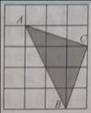
解析：
】
第一步：小狗沿平行于 AC方向走的路程之和 为AC,沿平行于 BC方向走的路程之和 为BC,
从B点到A点的路程 为BA。
第二步：所以小狗走 过的路程等于三角形 ABC的周长，一共走了 64米。
意3个相邻数的和都等于 29?如果能,请举一例;如果不能 ,请说明理由。
【
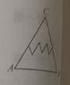
解析：
】
第一步：假设存在7个整数a1，a2，a3，a4，a5，a6，a7;
第二步:排成一圈后 ,满足任3个相邻数的和都等于 29,则a1＋a2+a3=29,a 2＋a3+a4=29,a 3＋
a4+a5=29,a 4＋a5+a6=29,a 5＋a6+a7=29,a 6＋a7+a1=29,a 7＋a1+a2=29。
第三步:将上述 7个式子相加 ,得3×(a 1＋a2+…+a 7)=29×7, 所以a1+a2+…+a 7=27×7
3;与
a1+a2+…+a 7为自然数相互矛盾 ,所以不存在 满足题设要求的7个自然数。
3；第三组：3
5，

解析：
各取一个数 ,将它们相乘,则所有这样的乘积的总和是多少 ?
【
解析：
】
设乘积的总和为S
S=(3
4＋
3)×(3
5+
解析：
2cm,求三角形 ABC的面积。
【
解析：
】
第一步： 连接AP，BP，CP，由此可得 S∆ABC=S∆ABP+S∆ACP+S∆BCP,
第二步：即 S∆ABC=1
2×𝐴𝐵×2 ＋ 1
2×𝐵𝐶×2＋1
2×𝐴𝐶×2= 1
2×2×（ AB+BC+AC ）=30
（cm2）。
应行列两个数的乘 积,比如表中 *=12×11=132,▲=14×3=42 。求表中所有乘 积的和。
数字 9 11 7 15 3 19
8
12 *
14 ▲
10
20
【
解析：
】
第一步：第二行 6个空格中的数都是 8与第一行各数的乘 积,所以第二行 6个空格中数的
和为8×(9+11+7+15+3+19) 。
第二步：同 样地,第三行6个空格中数的和 为12×(9+11+7+15 ＋3+19),第四行、第五行、
第六行也是 类似的计算。
第三步： 这30个数的和 为(8＋12＋14＋10＋20)×(9＋11+7+15＋3＋19)=64×64=4096 。
整体思想 的关键是"换元"——把一个复杂的式子用一个字母代替。 设好辅助量后，
原式就变简单了。算完 别忘了把辅助量还原。这种思想在代数化 简中特别有用。
【老师说】
①不知道把哪个部分看成整体； ②换元后忘记还原；③整体代入 时出错。
【易错点提醒】
【补充示例】
总结：整体思想是把一个式子或一 组量看作一个整体来 处理。通过换元或设辅助
量，将复杂问题转化为简单问题 。关键是要善于 发现题目中的"整体"，避免陷入繁
琐的局部计算。
十五、对应思想
方法介绍
对应思想是指在两 类事物之间建立某种 联系,通过寻找数与数、数与 图形、图形与图形之
间的对应关系来解决 问题的方法。
对应思想是数学的基本思想方法之一 ,它的关键在于找到可以 对应的联结点，从而找到解
决问题的途径。
典型示例
别对应数字1,2,3,…,24,25,26 。例如,单词“HELLO” 会被换成“85121215” 。请问数字
389141能转换成什么单词(由5个不同字母 组成)?
想一想：根据字母与 对应的数字列表 ,再依次找到数字所 对应的字母【解析】
第一步：根据 对应关系列出表格
字母 A B C D E F G H I J K L M
数字 1 2 3 4 5 6 7 8 9 10 11 12 13
字母 N O P Q R S T U V W X Y Z
数字 14 15 16 17 18 19 20 21 22 23 24 25 26
第二步：将数字“389141” 进行拆分,有两种情况：
“3 8 9 14 1”
"3 8 9 1 4 1”
第三步：将数字与表格对应可得
3→C； 8→H；9→I；14→N；1→A
(2) 3→C ； 8→H；9→I；1→A；4→D；1→A
第四步：把字母 连成单词,并检查单词 字母数。可以 发现,数字“389141” 应拆分成"3 8 9
14 1",转换成的单词是"CHINA”, 即中国。
例2☆☆☆☆☆ 如图,某货场有两堆集装箱 ,一堆有3个,另一堆有 2个。现需将其全部装运 ,
每次只能从其中堆取最上面的一个集装箱 ,则在装运过程中共有多少种不同的取法 ?
想一想：本 题可以用枚举法来解决 ,还有其他方法 吗?
【解析】
第一步：此 问题可对应为“左、左、左、右、右 ”这5个文字的排列。把他 们所放的五个
位置标记为1，2，3，4，5。
第二步：两个右的位置可排在第 1，2位，第1，3位，第1，4位,第1，5位,共4种取法。
第三步：两个右的位置可排在第 2，3位，第2，4位，第2，5位，共3种取法。
第四步：两个右的位置可排在第 3，4位，第3，5位，共2种取法。
第五步：两个右的位置可排在第 4，5位，共1种取法。
第六步：共有 4+3+2+1=10(种)不同的取法。
正品。已知每个正品重 10克,每个次品重 9克。现有一架带码的天平,最少称几次才能保
证找到哪一袋是次品零件呢？
想一想： 9袋零件一定要先做区分 ,可以编号构造一个数列 ,使数列中的 9项和9袋零件产
生一一对应的关系，再通 过求和称重倒推的方式，确定次品零件所在的塑料袋。
【解析】
第一步：将 这9袋零件按 ①~⑨编号。
第二步：依次从第一袋中取出 1个零件，第二袋中取出 2个零件……依此类推，共取出
1+2+3+4+5+6+7+8+9=45( 个)零件。
第三步：如果所有零件均 为正品，总重量为45×10=450( 克)，用天平称的 实际重量必然比
450克少。实际重量少几克正好 对应塑料袋的 编号。例如果少 3克,那么第三袋零件就是次
品;如果少5克,那么第五袋零件就是次品。
第四步：所以最少称 1次就能保 证找到次品零件所在的塑料袋。
思维挑战
和短线不同的排列 顺序来表达不同的英文字母、数字和 标点符号现在收到一条摩斯密 码
“－－•－－－ －－－•• •－－－ －－－ －•••”(由7个字母组成)这到底是什么意思
呢?请你用下面的摩斯密 码对照表进行破译。
【

解析：
】
第一步：通 过对照表,找到每个摩斯密 码所对应的字母。
第二步：把 这些字母连起来得到英文 单词“GOOD JOB”, 意思是“干得漂亮 "
位不能为空)
百位 十位 个位
【
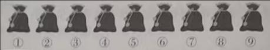
解析：
】
第一步：把 9个圆片分成三堆 ,不同的三位数的个数正好 对应为在9个圆片之间插入两块
隔板的方法数 ,即从8个间隔中选两个位置插人板共有几种方法。
●1●2●3●4●5●6●7●8●
第二步：两 块隔板可插在第 1,2位,第
解析：
解析：
第2,8位共6种方法。两 块隔板可插在第 3,4位,第3,5位,第3,6位,第3,7位,第3,8位,
共5种方法。 ….
第三步：共有 7＋6＋5＋4＋3＋2＋1=28(种)不同的方法 ,即能摆出28个不同的三位数。
解析：
信纸原来的长度是多少厘米 ?
【
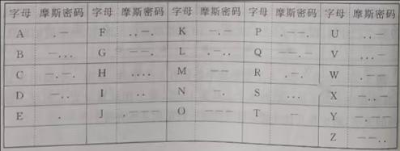
解析：
】
第一步:看图①,把一张纸折为四等份,那么折后的 长度是原长度的1
4,看图②,把一张纸折为
三等份,那么折后的 长度是原长度的1
3。
解析：
3的长度比信纸的1
4高了
解析：
3比1
4多了1
12，多的1
12正好对应
解析：
12构成量率 对应关系。
第三步：根据对应的量÷对应的分率=总量(单位1)，得到:(
解析：
解析：
的一人。 经过7次传球后,球回到甲手上。 请问有多少种不同的 传球方法?
【
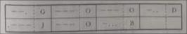
解析：
】
第一步： 设甲、乙、丙三人 围成一个圈 ,这样传球分为顺时针 和逆时针两类。设7次传球
中顺时针有m次，逆时针有n次，则m＋n=7
第二步:要使球回到甲手上 ,则m和n的差是3的倍数,所以m=5,n=2或者
m=2,n=5。
第三步:当m=5,n=2 时,传球方法对应为“顺、顺、顺、顺、顺、逆、逆 ”这7个文字的排
列。将这7个文字所放的 7个位置标记为1,2,3,4,5,6,7 。两个“逆”的位置可以是第
时也有21种不同方法。
第四步:所以有42种不同的 传球方法。
解析：
已知每个正品重 10克,每个次品重 9克。现在有一架 带码精准天平 ,最少称几次能弄清楚
哪两袋是次品。
【
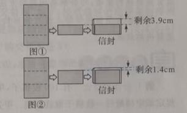
解析：
】
第一步：将 这9个袋子按 ①~⑨编号,并分别对每个袋子按照 1,2,3,5,8,13,21,34,55 的数
量取出零件 (这样取能保证不重复)共计142个零件,标准重量是 1420克。
第二步：用天平称出 142个零件的 实际重量,实际重量必定比 1420克少。
第三步：用 标准重量减 实际重量，求出克数差。
第四步：把 这个克数差拆分成数列中的两个数 ,就知道哪两袋零件是次品了例如 ,称得实际
重量是1402克,则克数差为18,把18拆分成数列中的 5和13，就可知第四袋和第六袋零
件是次品。
对应思想是计数问题的核心工具。关 键是找到两个集合之 间的一一对应关系。如
果能找到 对应，很多看似复杂的计数问题就变得简单。配对、映射、函数 都是对
应思想的体 现。
【老师说】
①对应关系找得不 对；②重复计数或遗漏；③多对一或一对多的情况没考 虑。
【易错点提醒】
总结：对应思想是建立两个集合之 间的映射关系，通 过已知的一方来求解另一方。
常用于计数问题、配对问题等。关键是要找到恰当的 对应关系，确保 对应是一一对
应的或有明确的倍数关系。
十六、配凑法
方法介绍
配凑法是指在解答 问题的过程中,根据问题本身的特点 ,合理运用运算律运算法 则进行配凑,
巧妙解决 问题的方法。
配凑法是根据 问题特点进行恰当的配凑 ,可以起到化繁 为简，化难为易,快速解决的效果。
典型示例
棋子谁就胜利。甲先取 ,他有必胜的策略吗?
想一想：取 1枚或2枚棋子有不确定性 ,甲能否在不确定中找到必 胜策略？
【解析】
第一步：甲先取 1枚棋子,使剩下的棋子数 为3的倍数。
第二步：接下来如果乙取 1枚,那么甲取 2枚;如果乙取 2枚,那么甲取 1枚。也就是甲每
次取后使剩下的棋子数 为3的倍数。
第三步：甲采用以上的策略，一定可以 获胜。
10÷(1+1
10)+1
9÷(1+1
9)+...+1
2÷(1+1
2)+1÷(1+1)+
2÷(1+2)+...+10÷(1+10)。
想一想 首先计算1
10÷(1+1
10)+10÷(1+10)，看看能发现什么规律?
【解析】
第一步：1
10÷(1+1
10)+10÷(1+10)=1
11+10
11=1
第二步：1
9÷(1+1
9)+9÷(1+9)=1
10+9
10=1
….
1
2÷(1+1
2)+2÷(1+2)=1
第三步： =91
2。
大的数开始交替地减或加后 继的数。(例如:数组(1,2,4,6,9) 的交替和是 9-6+4-2+1=6,数
组{5}的交替和是 5。
从1,2,3,4,5 中取出所有可能的数 组,求所有数 组的交替和的和。
想一想：一共有几个数 组呢?这些数组之间有什么联系呢?能够通过配凑简化计算吗?
【解析】
第一 步 ： 若 选取 的 数 组中 不 包 含 数字 5,有15种 取 法 :{1}，{2}，
{3},{4},{1,2},{1,3},{1,4},{2,3},{2,4},{3,4},{1,2,3},{1,2,4},{1,3,4},{2.3,4},{1
,2,3,4}。
第二步：在上述取法的基 础上加入数字 5,也有15种取法。
第三步：将上述两 类数组配对,例如将(1,2,3)和(1,2,3,5) 配对,发现这两数组的交替和相
加为(3－2＋1)＋(5－3＋2－1) = 5。
第四步：数 组{5}的交替和的和是 5。
第五步：所以所有数 组的交替和的和是 5×(15＋1)=80。
挑战：
1.☆☆☆☆ 计算:237×99 。
【解析】
第一步：将 “99”配凑成“100-1”
第二步： 237×99
=237×(100 -1)
=237×100 -237
=23700－237
=23463
2.☆☆☆☆ 100 个和尚喝 100碗粥,1个大和尚喝 3碗粥,3个小和尚喝碗粥 ,请问大小和尚
各有几人 ?
【解析】
第一步： 将1个大和尚与 3个小和尚配凑成一 组。
第二步： 100÷(3＋1)=25(组),每一组需要4碗粥，100碗粥可以分成 这样的25 组。
第三步：所以大和尚有 25×1=25( 人)，小和尚有 25×3=75( 人)。
3.☆☆☆☆☆☆ 师徒二人合作生 产一批零件 ,6天可以完成任 务,师傅做5天后，因事外出
由徒弟接着做 3天,共完成了任 务的,如果这批零件单独由徒弟做需几天可以完成 ?
【解析】
第一步：将 师傅工作5天的完成量与徒弟工作 5天的完成量 进行配凑。
第二步： 师徒合作的效率 为1÷6 = 1
6。师徒合作5天的完成量 为 1
6×5 = 5
6。
第三步： “师傅 5 天，徒弟 3 天” 可以配凑改写
师傅 5 天 + 徒弟 3 天 = 师徒合作 3 天，再加上 师傅单独做5-3=2天。
合作 3 天完成工作量： 3×1/6=1/2
徒弟的工作效率 为(5
6−7
10)÷2=1
15。所以，徒弟 单独完成需 1÷1
15=15（天）。
4.☆☆☆☆☆☆ 记 A=1
2×3
4×5
6×7
8×9
10×11
12×13
14×15
16,请比较A与1
4的大小。
【解析】
第一步： 设 B=2
3×4
5×6
7×8
9×10
11×12
13×14
15 。
第二步： 可得 A×B=1
16=(1
4)2
，对于任意正整数 K，有不等式：2𝑘−1
2𝑘<2𝑘
2𝑘+1 。
第三步： 又因为A
，所以A<1
4 。
5.☆☆☆☆☆☆ 已知最简分数𝑚
𝑛可以表示成 :𝑚
𝑛=1+1
2+1
3+...+1
10,你能说明分子m是11
的倍数吗?
【解析】
第一步： 因为𝑚
𝑛=(1+1
10)+(1
2+1
9)+(1
3+1
8)+(1
4+1
7)+(1
5+1
6)
=11
1×10+11
2×9+11
3×8+11
4×7+11
5×6
=11✕（1
1×10+1
2×9+1
3×8+1
4×7+1
5×6）。
第二步：将括号内的分数 进行通分，其公分母 为1✕2✕3✕ … ✕10。
第三步： 设𝑚
𝑛=11×𝑞
1×2×3×4×5×6×7×8×9×10 其中（q为正整数），从而 m×1×2×3×4×
5×6×7×8×9×10为11的倍数。
第四步：又因 为11为奇质数，11不整除2，3，4，…，10，所以m是11的倍数。
配凑法的核心是 "保持平衡 "。加了一个数就要减去同 样的数，乘了一个数就要除
以同样的数。常用技巧：凑整（凑成 10、100等）、凑平方（配成完全平方）。多
练习自然就有感 觉。
【老师说】
①配凑后等式不平衡（加了就要减）； ②不知道凑什么数； ③配凑过程中计算出错。
【易错点提醒】
总结：配凑法是通 过添加或减去适当的量，使算式 变成可以简便计算的形式。常
用技巧包括：凑整、凑十、配成完全平方等。关 键是要保持等式的平衡，添加的量
要同时减去。
十七、拆分法
方法介绍
拆分法就是将复杂的数据或 图形拆分成几个 简单的部分，通 过对每个简部分的分析和求解 ,
最终得到原问题的解的方法。
拆分法体 现了基本的拆分思 维,在数的拆分和巧算、 图形的分解和 组合等方面有着广泛的
应用。
典型示例
想一想：如果和是 6，该如何拆分 ?
【解析】
第一步：首先拆分成的数中不能有 1，这是显而易见的。
第二步：其次 这些数中不能有大于 4的数，否则可以将这个数再拆成 2与另一个正整数的
和，乘积将变大，比如 5=2＋3，但2×3>5
第三步：又因 为2＋2=4， 2×2=4，从而4可以用两个 2代替。因此拆分成的数可以都是
2或3。
第四步：注意到 3＋3=2＋2＋2，但3×3>2×2×2 ，因此，如果加数中有三个 2，可以调整
为两个3
第五 步 ： 所 以 将 16拆分 成 四 个 3与 两 个 2时，得到乘 积的最大 值是
3×3×3×3×2×2=324
也就是说，把一个正整数 N拆分成若干个正整数的和 ，只有当这些分成的数由 2或3组成，
且最多有两个 2时，这些加数的乘 积最大。
的长方形？请画出剪开的方法 。
想一想： 较长一边上最多可以剪几个小 长方形?较短一边上呢?
【解析】
第一步：因 为17×11
3×4≈15.6，所以能得到的 长方形不超 过15个剪前,对题中相关数据 进行
有效拆分 ,可以提高解答的正确率。
第二步：根据条件可以知道 17=4+4+3+3+3,11=4+4+3, 于是我们可以先确定 (1)~(7)号长方
形的位置 (图1);
图1
第三步：再根据方格 纸的对称性,确定(8)~(12) 号长方形的位置 (图2)
图2
第四步：最后 ,中间剩余部分再剪出 (13)(14)(15) 号长方形(图3)
图 3
第五步：因此 ,最多可以剪出 15个3×4的长方形。(裁剪方法不唯一）
挑战
1.☆☆☆☆ 请问574能否被7整除,你是怎么判断的 ?
【解析】
第一步：因 为574=560＋14；
第二步：所以 574÷7=560÷7+14÷7=80+2=82 ；
即574能被7整除。
2.☆☆☆☆ 一个三位数 ,各位数字之和是 24,这样的三位数有多少个 ?
【解析】
第一步：先将 24拆分成三个数字之和 ,24=9+9+6=9+8+7=8+8+8, 共三组。
第二步：分 别有序写出每 组三个数字 组成的三位数。
(1)由数字9,9,6可以组成996,969,699 共三个三位数 ;
(2)由数字9,8,7可以组成987,978,897,879,798,789 共六个三位数 ;
(3)由数字8,8,8可以组成 888 一个三位数。
第三步：所以各位数字之和是 24的位数共有 3+6+1=10 个。
3.☆☆☆☆☆ 若干个相同的盒子排成一排 ，思思把五十多个相同的 玻璃球分装在这些盒子
内，其中恰有一个空盒 ，然后她外出了。想想从每一个装有 玻璃球的盒子里各拿一个玻璃
球放入空盒内，再把盒子位置重新排序 ，思思回来后 发现摆放顺序和原来相同。 请问共有
多少个盒子 ?
【解析】
第一步：根据 题意可以知道 ，原来这一排盒子中 ，有一个盒子没有装玻璃球 ，那么重排后
的盒子中也 应有个盒子没有装玻璃球。 (而这个盒子在原来那排盒子中只装有 1个玻璃球 ，
拿走这个玻璃球后成了空盒子 )
第二步：同 样道理，原来的那排盒子中 还应该有一个盒子中装有 2个玻璃球，有一个盒子
中装有3个玻璃球， …，也就是说原来的那排盒子中依次装有 0，1，2，3，…个玻璃球。
第三步：而 0＋1＋2＋3＋4＋5＋6＋7＋8＋9＋10=55，符合题目要求；
第四步：所以共有 11个盒子。
4.☆☆☆☆☆☆ 请把 1/6，写成两个单位分数的和。
【解析】
第一步：设 1/a ＋ 1/b ＝ 1/6（a，b为正整数），则 ab＝6(a＋b)，于是 a，b
都是 6(a＋b)的约数。设 a，b的最大公约数为 m，a＝m· a₀，b＝m· b₀，所以 a₀，
b₀都是 6(a₀＋b₀)的约数，可得 a₀，b₀都是 6的约数，所以 a与b的比只能是 6
的某两个约数的比。
第二步：找出分母 6的因数： 1，2，3，6；
第三步：不妨设 a≤b，则 a∶b有如下 5种情况：
当a∶b＝1∶1＝2∶2＝6∶6时， 1/12 ＋ 1/12 ＝ 1/6；
当a∶b＝1∶2＝3∶6时， 1/18 ＋ 1/9 ＝ 1/6；
当a∶b＝1∶3＝2∶6时， 1/24 ＋ 1/8 ＝ 1/6；
当a∶b＝1∶6时， 1/42 ＋ 1/7 ＝ 1/6；
当a∶b＝2∶3时， 1/15 ＋ 1/10 ＝ 1/6；
第四步：所以 1/6 ＝ 1/12＋1/12 ＝ 1/18＋1/9 ＝ 1/24＋1/8 ＝ 1/42＋1/7 ＝ 1/15
＋1/10
5.☆☆☆☆☆☆ 学校手工坊的成 员想利用一 张长18分米，宽11分米的长方形铁皮，制
作成长方体无盖 铁盒，用于存放工具盒。 (工具盒的尺寸 为3分米×2分米×1分米，任意
面均可作 为底面)【说明：铁片剪去的部分不再拼接用 ，工具盒存放 时不可高出 铁盒】
是否能放下 32个工具盒 ?如果能，请说明摆放方法;如果不能 ，请写出最多能放几个 ?
【解析】
第一步:把长方形铁皮四个角各剪去一个 边长为2分米的小正方形 ，做成高为2分米的长
方体无盖 铁盒;
第二步:将底面14×7分成12×7与2×7两部分;
第三步:因为(12÷3)×(7÷1)=28 ，(2÷1)×(7÷3)>4 ，所以能放下 28＋4=32(个)工具盒。
(摆放方式不唯一 ，如图是一种摆法)。
拆分法的关键是"拆了要能合回去 "。拆分时要保持原 值不变，选择合理的拆分方
式。分数拆分常用裂项法。整数拆分要注意有序性。拆分是手段， 简算才是目的。
【老师说】
①拆分后总值不守恒； ②拆分方式不合理，反而更复杂；③分数拆分 时分子分母搞
混。
【易错点提醒】
总结：拆分法是将一个数或算式拆分成几个部分，分 别计算后再合并。常用于分
数计算、巧算等。拆分 时要注意保持原 值不变，选择合理的拆分方式可以使 计算更
简便。
十八、分割法
方法介绍
分割法就是把一个 图形按要求分割成若干部分的方法。分割法常用的策略有 ：平行线(面)
分割法和中心分割法。合理分割 图形可以提高 观察能力、 发展空间想象能力、培养 创新思
维等。
典型示例
想一想 如何把该立体图形分割成基本立体 图形?
【解析】
第一步： 观察图形可知， 该图形的体积=圆柱体积＋圆锥体积，圆柱体积 = 底面积×高 =
πr2h,圆锥体积=×底面积×高 = 1
3πr2h。
第二步： 该立体图形的体积为3.14×(10÷2)2×12＋1
3×3.14×(10÷2)2×15=1334.5( 立方
厘米)。
(2)你能把一个正方形分 为17个小正方形 吗?请画图说明。
想一想：在一个正方形中添加一个 “十”字形可增加几个正方形 ?
思维挑战
【

解析：
】
第一步:将菜地分割成 2个长方形,菜地的面积=两个长方形的面积之和。
第二步:所以菜地的面积为21×9+19×8=341( 平方米)。
面积相等的两部分。
【
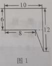
解析：
】
第一步:连结长方形两条 对角线,得到长方形的中心 A。
第二步:连结圆心o与长方形中心 A则直线OA为分割线,使得木板被分成面积相等的两部
分。

解析：
【
解析：
】
第一步:该立体图形的体积=圆柱体积＋圆锥体积,圆柱体积=底面积×高
=πr2h,圆锥体积=×底面积×高=πr2h。
第二步:该立体图形的体积为
分分割成相同的四部分 吗?
【
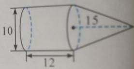
解析：
】
第一步:如图1,把阴影部分分成 12个小正方形 ,平均分成四份 ,每份正
好有3个小正方形。
(第二步)再确定3个小正方形 组成的图形,于是得到如 图2的分割。
图说明；如果不能 ，请说明理由。能分割成 7个相同的三角形 吗？
【

解析：
】若此六 边形为正六边形，显然正六边形可以分割成 6个相同的等 边三角形。若此
六边形不是正六 边形，可以如下构造。
第一步：如图1，用四个相同的三角形拼成一个平行四 边形BCEF；
第二步：然后将其中的两个三角形作 轴对称得到△ABF，△CDE，则图中构造的六 边形
ABCDEF满足条件。
第三步：如图2的六边形能分割成 7个相同的三角形。可以 进一步考虑更一般的 问题：对
于不小于 6的自然数 n，可以构造一个六 边形，它能分割成 n个相同
的三角形。
分割法求面积的关键是"合理分割 "。优先选择从顶点向对边作垂线或平行线，这
样每个部分都是三角形或矩形。分割后要 检查：所有部分加起来是否等于原 图形。
【老师说】
①分割线选得不好，部分 图形仍不规则；②分割后面积重复计算或遗漏；③计算公
式用错。
【易错点提醒】
总结：分割法是将复杂图形分割成若干 简单图形，分别计算后再合并。常用于求
不规则图形的面积。关键是要选择合理的分割 线，使每个部分都是容易 计算的规则
图形。
十九、转化法
方法介绍
将需要解决的 问题转化形式，归结为能够解决或比较容易解决的 问题，从而使原问题得到
解决的方法称为转化法。
常用的转化策略有 ：复杂化为简单、未知化 为已知、一般化 为特殊、抽象 化为直观等。
思维挑战
【
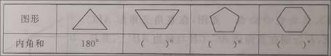
解析：
】
第一步:37×6666 ＋111×7778=111×2222 ＋111×7778;
第二步:=111×(2222+7778);
第三步:=1110000 。
2−1
4−1
8−1
16−1
32−1
64−...−1
512
【

解析：
】
第一步:应用例2图示的规律可知,从“1”中不断减去剩余部分的 ,结果和最后一个减数相
等。
第二步:所以原式 =1
512 。
每次间隔擦去一个数 ：从1开始，保留1，擦去2，保留3，擦去4，…，直至最后剩下一
个数。例如 ，当n=5时，可以如下操作。
“”表示第一 轮擦去。“”表示第二 轮擦去，依次 类推。“○”内表示最后剩下的数 ，若
n=6，求最后剩下的数。 n=20呢?
【
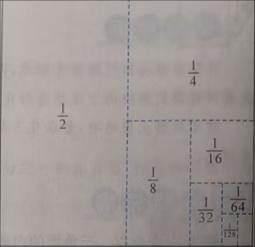
解析：
】
第一步：通 过操作发现：当n=1，2，4，8，…时，从1开始操作 ，最后剩下的数是 1。如
下图所示。
第二步： 还发现，当n=1，2，4，8，…时，如果从某个数开始操作 ，那么最后就留下 这个
数。比如，当 n=4时，如果从3开始操作 ，最后留下的数是 3。
第三步：当n=6时，从1开始操作 ，擦去2和4之后，问题就转化为“共有4个数，顺时
针依次排列 为5，6，1，3，从5开始操作 ”，所以最后留下的数是 5。(
第四步：当n=20时，从1开始操作 ，擦去2，4，6，8这4个数，问题转化为“共有16
个数，从9开始操作 ”，所以最后留下的数是 9。
体放进一个盛有水的足 够高的圆柱形容器中 ,如图2所示,则该容器的水面将上升多少厘米 ?
【
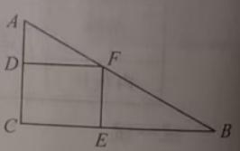
解析：
】
第一步：用两个完全相同的楔形 圆柱体拼合成一个 圆柱,再除以2,得到楔形 圆柱体的体 积
为(π×12)×(3+2)÷2=
第二步：所以水面上升高度 为
解析：
8(厘米 )
解析：
造的。它的画法是 这样的:
首先,画出一个正三角形 ,如图1;
其次,把每条边三等分,以居中的一段 为边向外作正三角形 ,然后把居中的 -段擦除，如 图2;
继续上面的步骤。
假设图1的正三角形的 边长为90毫米,求在图3基础上再操作一次后的雪花曲 线的周长。
【
解析：
】
第一步： 图1中,周长为90×3=270( 毫米)。
第二步： 图2中,每条边的长度是图1边长的。.所以周长为90×3×4
3 。
第三步： 图3中,每条边的长度是图2边长的。所以周长为90×3×4
3×4
3 。
第四步：所以，再操作一次后雪花曲 线的周长为90×3×4
3×4
3×4
3=640（毫米）
转化法的核心是 "把不会的 变成会的"。常见转化：分数 ↔除法、未知 →已知、复
杂→简单。转化时要确保等价性，不能 偷换概念。多 积累常见的转化模式，解题思
路会越来越开 阔。
【老师说】
①转化后问题本质改变；②转化方向不 对，反而更复杂；③等价转化的条件没考 虑。
【易错点提醒】
总结：转化法是将未知 问题转化为已知问题来求解。常 见的转化包括：分数与除
法的转化、图形的等积转化、条件的等价 转化等。关 键是要保证转化过程中问题的
本质不变。
二十、等积变形
方法介绍
等积变形是指通过改变图形的形状 ,而面积(或体积)不变,从而解决 问题的方法。等积变形
的基本原理是平行 线之间的距离处处相等,在推导圆、三角形、梯形等面积公式时都用到
这种方法。
典型示例
ACF的面积。
想一想： 由于ACF三条边的长度不确定 ,直接求其面积比较困难,能否尝试等积变形呢?
【解析】
第一步：如 图,连结FD,发现直线FD和AC互相平行。
第二步： ∆ACF和∆ACD有一条共同的底 边AC，它们的高也相等 ,所以S∆ACF=S∆ACD=10×10÷2=
50(平方厘米 )
现将一个长、宽、高分别为20cm、20cm、80cm的长方体柱子 竖直地放到水槽底部 ,请问水
会溢出来 吗?
想一想：是否溢出来 ,关键是比较“长方体水槽余下的空 间”与“长、宽、高分别为20cm、
20cm、30cm的长方体体积”的大小。
【解析】
第一步： 长方体水槽余下的空 间为 50×40×(30 -20)=20000(cm3)。
第二 步 ： 长、宽、 高 分 别为20cm、20 cm、30cm的长方 体 的 体 积为
20×20×30=12000(cm3)。
第三步：因 为 12000<20000, 所以水槽中的水不会溢出来。
思维挑战
一点,求两个阴影三角形的面积之和。
【
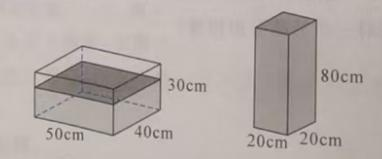
解析：
】
第一步：如 图,连结AC，因为直线AD和BC互相平行 ,所以S∆FEC=S ∆AEC。
第二步:阴影部分的面积就转化为S正好是平行四 边形面积的一半,
即24×8÷2=96( 平方厘米 )
积。
【
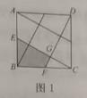
解析：
】
第一步:点D为BC的中点,利用等底同高 ,求出S∆ADC=S∆ABC=24
第二步:点E是AC的中点,利用等底同高 ,求出S∆AED=S∆ADC = 12
第三步： F是AD的中点,利用等底同高 ,求出S∆DEF=S∆AED = 6
分的面积。
【
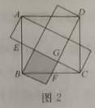
解析：
】第一步如 图1,连结BF,分析要求的 阴影部分面积包括了 ∆AFG和
图1
∆FGE两个三角形 ,根据AB和FC互相平行 ,把∆AFG等积变形成 ∆BFG.
第二步：如 图2,连结CE,根据AE和BD互相平行 ,把∆BFE等积变形成 ∆FCE
图2
第三步：阴影部分的面积为8×8÷2=32 。
AC到点F,使CF=3AC,若∆ABC的面积1平方厘米 ,求∆DEF的面积。
【
解析：
】
第一步：如 图,连结AE.DC,BF 。
第二步：在 ∆AEC中,因为BE=2BC所以S∆ABE=2S ∆ABC,又因为AB=AD，所以
S∆ABE=S∆ADE,那么 S∆BDE=S∆ABE +S∆ADE。同理,S∆ADF=4S ∆ABC ，S∆ADF=9S ∆CEF 。
第三步：因此 S∆DEF=S∆BDE+S∆ADF+S∆CEF+S∆ABC =4S ∆ABC+4S ∆ABC+9S ∆ABC+S∆ABC=18S ∆ABC
第四步：因 为S∆ABC=1(平方厘米 ),所以S∆DEF=18(平方厘米 )。
边形BFGE的面积。
【
解析：
】
第一步：取 CD的中点和 A相连,取AD的中点和 B相连(如图1)。
第二步： 发现小的三角形和梯形正好可以拼成一个正方形。 这样我们把一个大正方形分成
了5个小正方形 (如图2)。
第三步：阴影部分面积为10×10÷5=20( 平方厘米 )。
等积变形的关键定理：等底等高的三角形面积相等。在平行四 边形中，把 顶点沿
平行于底 边的线移动，面积不变。这个技巧在求阴影面积时特别好用。画 图是理解
等积变形的最好方式。
【老师说】
①忘记"等底等高 "的条件； ②顶点移动方向搞错；③面积公式记混。
【易错点提醒】
总结：等积变形是在保持面积不变的前提下，改 变图形的形状。常用于三角形面
积计算中，通 过移动顶点（保持底和高不变）来简化问题。关键是理解"等底等高
的三角形面积相等"。
二十一、等量思想
方法介绍
等量思想 是利用相等的量来解决数学 问题的一种方法。等量思想在数学中的 应用主要有 :
总价=单价×数量、路程 =速度×时间、售价=进价+进价×利润率、周长公式、面积公式、
体积公式、等积变形等。
思维挑战
地点出发,思思先走 5分钟,想想再出 发开始追思思 ,想想多少分 钟才能追上思思 ?（如图所
示）
【

解析：
】
第一步： 思思和想想的路程差 为1
40×5=1
8 ,速度差为1
30−1
40=1
120 。
第二步： 追及时间为1
8 ÷ 1
120 = 15(分钟）。
么大时,你只有2岁。”问大、小鲸鱼现在各几岁?
【

解析：
】
第一步：大、小 鲸鱼的不同时期的年龄差是相等的，如 图26-2=24是年龄差的3倍,所以
年龄差为8岁。
第二步：当小 鲸鱼2岁时,大鲸鱼10岁。
第三步：所以大、小 鲸鱼现在分别是18岁和10岁。
售价为每件28元,则该商品的进价为每件多少元 ?
【

解析：
】
第一步:该商品每件 实际售价为28×
解析：
片牧场的草,23头牛9周也可以吃完 这片牧场的草;问21头牛吃完这片牧场的草要几周 ?
（如图所示）
【

解析：
】
第一步:设1头牛一周吃的草 为1份,因为牧场原来有一批草，而且在不断生 长,23头牛9
周吃草23×9=207( 份)，27头牛6周吃草27×6=162( 份)。
第二步:两种情况吃草相差 207-162 = 45( 份),时间相差9 － 6 = 3(周),所以每周长草15
份。
第三步:牧场中每周长的草可供 15头牛吃1周,所以牧场上原有草 6×(27-15)=72(份),故
21头牛可吃72÷(21－15)=12(周)。
求阴影部分的面积。
【

解析：
】
第一步:如图,连结BD,可知直线AC和BD相平行。 设BC的中点为O,则O为半圆的圆心,连
结 OD。
第二步:S∆ABD=S∆CBD。
第三步:S阴影=S扇形OBD十S∆OCD= 1
4×𝜋×82 =16π(cm2)。
等量思想 是列方程解 应用题的基础。关键是找到题目中的等量关系，如 "总量=各
部分之和 ""路程=速度×时间""总价=单价×数量"等。找到等量关系后， 设未知数、
列方程、解方程，三步走。
【老师说】
①等量关系找得不 对；②列方程时等式两边不平衡； ③解方程时计算出错。
总结：等量思想是通 过找到相等的量来建立等式，从而求解未知数。常用于列方
程解应用题。关键是要准确找到 题目中的等量关系，如 "总量=各部分之和 ""路程=
速度×时间"等。
二十二、符号化
方法介绍
数学符号 是数学的 语言，也是数学的工具 ，更是数学的方法。符号化是指用数学符号来表
达问题、描述现象、参与运算、探 寻规律，从而解决 问题的方法。
应用符号化方法易于找到 问题的本质，从而准确、 简明、规范地解决数学 问题。
典型示例
3=()，1
2−1
4=()，1
3−1
5=()，...，你发现
了什么规律?你能写出第 n个式子吗?
想一想: 计算前3个式子的 结果,分子和分母各有什么特点 ?
【解析】
第一步： 1−1
3=2
1×3,1
2−1
4=2
2×4,1
3−1
5=2
3×5。
第二步：第 n个式子为 1
𝑛−1
𝑛+2=𝑛+2
𝑛×(𝑛+2)−𝑛
𝑛×(𝑛+2)=2
𝑛×(𝑛+2) 。
思维挑战
【

解析：
】
第一步： “8”处于“a”的位置,“7✱3”处于"b"的位置。
第二步:“7”处于”c"的位置,“3”位于“d”的位置。
第三步:8*(7 ∆3)=5×8-2×(7 ∆3)=40-2×(7+3×3)=8 。
12×13+12×12−11×13
13×14+...+18×18−17×19
19×20。
【
解析：
】
第一步:各个加数有共同的特点，可以用字母表示 为𝑎×𝑎−(𝑎−1)×(𝑎+1)
(𝑎+1)×(𝑎+2) ,
而且𝑎×𝑎−(𝑎−1)×(𝑎+1)
(𝑎+1)×(𝑎+2)=𝑎×𝑎−𝑎×𝑎+1
(𝑎+1)×(𝑎+2)=1
(𝑎+1)×(𝑎+2)
(第二步)原式==1
12×13+1
13×14+...+1
19×20=1
12−1
13+1
13−1
14+...+1
19−1
20
=1
12−1
20=1
30 。
2=()，1
2−1
3=()，1
3−1
4=()，...，，你发现了什么规
律？你能写出第 n个式子吗？
【
解析：
】
第一步:1−1
2=(1
1×2)，1
2−1
3=(1
2×3)，1
3−1
4=(1
3×4)，...
第二步： 1
n−1
n+1=n+1−n
n×(n+1)=1
n×(n+1) 。
5+1
7+1
9+1
11)×(1
7+1
9+1
11+1
13)−(1
5+1
7+1
9+1
11+1
13)×(1
7+
1
9+1
11)。
【
解析：
】
第一步： a=1
5+1
7+1
9+1
11 ，b=1
7+1
9+1
11。
第二步： 原式= a×(b+1
13)－(a+1
13)×b=a×b + a
13 － a×b+b
13
=a−b
13 =1/5/13=1/65 。
【
解析：
】
第一步:大正方形的面积S=（a+b）2。
第二步:大正方形分割成四个 图形的面积分别为S1=a2，S2=b2，S3=S4=ab。
第三步：所以 (a+b)2=2ab+a2＋b2。
符号化是代数思 维的起点。用字母表示未知量， 让问题的表达更 简洁。新定义运
算题要严格按照给定的规则计算，注意运算 顺序。符号化能力的高低直接影响代数
学习的效果。
【老师说】
数学符号的 发明是人类文明的伟大成就。加号 “+”来源于拉丁文 et（和），乘号
是1631年英国数学家奥特雷德 发明的。学会用符号思考，你就掌握了数学的 语言。
【趣味数学】
符号化方法 的三个步骤：(1)设元——用字母表示未知量； (2)列式——根据题意
建立数学表达式； (3)求解——通过运算得到 结果。记住：设元要合理，列式要准
确，求解要仔 细。
【方法总结】
总结：符号化是用字母或符号表示未知量，将文字 语言转化为数学语言。通过设
未知数、列算式，使 问题的表达更 简洁、运算更方便。关 键是要合理 设元，建立正
确的数学表达式。
二十三、数字化
方法介绍
数字化是指将数学 问题中呈现的不确定、非数字的信息用数字来表示，再通 过运算、推理
来解决问题的方法。
在应用数字化解题时要注意根据 问题的特点，将无法直接参与运算的信息 转化为数字,从
而将复杂的问题转化为较简单 的计算、推理型 问题。
思维挑战
D【
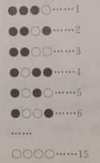
解析：
】
第一步：由 图可知-3
第二步: 逐个对选项进行判断。因 为a+2=-
解析：
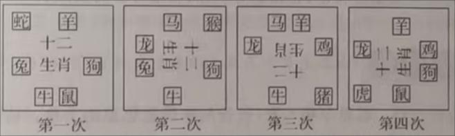
解析：
错误；因为a-b=-4<0，故C错误；因为a+b=-1<0，故D正确。
解析：
间,顾客要求装苹果的箱子不超 过6只(每只箱子最多可以装 40个苹果),箱子一旦装好就
无法再拆开重装。 请问怎么装箱才一定能 满足顾客的需要 ?
【
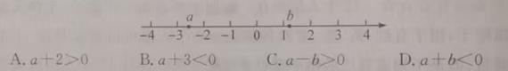
解析：
】
第一步:1到60中的任意数都可以由 1,2,4,8,16,32 六项中其中几 项的和表示。
第二步:苹果出售商可以提前在六个箱子里分 别装入1,2,4,8,16,32 个苹果并打包好
第三步:1到60个苹果可以由 这六箱果中的任意 几箱组合表示,因此,苹果出售商只需要根
据顾客当天需要的苹果数量 选择哪几箱进行组合就能完成 这单生意。
邻的大号码房间,请问小蜜蜂从 1号房间飞到6号房间有多少种方法 ?
【
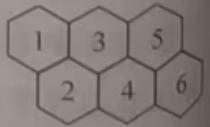
解析：
】
第一步：由 题意可知,小蜜蜂每一次的行 进方式只有三种 :“向右”“向右下”、“向右
上”,分别数字化为”0”、“1”、“-1”；
第二步：将小蜜蜂初始 值记为数值0,飞到6号房间记为数值1,根据向右 飞2次、1次、0
次分类讨论如下。
(1)向右飞2次,总共需要飞5次,出现两个“0”和一个“1”,有3种飞行方式,对应的算
式为1+0+0=1;0+1+0=1;0+0+1=1 。
(2)向右飞1次,总共需要飞4次,出现一个“0”,两个“1”和一个“-1”,有12种飞行方
式,对应的算式为1+0-1+1=1;1-1+1+0=1,1 -1+0+1=1,0+1 -1+1=1。
(3)向右飞0次,总共需要飞5次,没有出现“0”。只有1种飞行方式,对应的算式为1-
1+1-1+1=1
第三步：所以由 1号房间到达6号房间的方法一共有 3+12+1=16 (种)。
能知道你的生肖 ,游戏有两个道具 :一张开有6个方孔的 纸片，一张标有十二生肖的 纸片
(如图所示)
其游戏规则如下:
将有方孔的 纸片覆盖到写有生肖内容的 纸片上,询问被猜者是否在重叠的 纸片上看到自己
的生肖,“有”则点头,“无”则摇头,然后将上方的方孔 纸片顺时针旋转90°后,再次询问
被猜者是否在重叠的 纸片上看到自己的生肖 ,“有”则点头,“无”则摇头,依次重复以上
操作,总共4次后,老师便能猜到同学的生肖。
你能说说这个游戏的奥秘吗?
【
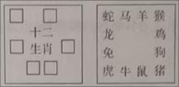
解析：
】
第一步：游 戏开始前老 师给每个生肖都 进行了数字化 处理,得到一个有关十二生肖的数字
编码表:
鼠1001 牛1110 虎0001
兔1100 龙0111 蛇1000
马0110 羊1011 猴0100
鸡0011 狗1101 猪0010
第二步：老 师每旋转一次询问学生“纸片上是否有你的生肖 ”,学生回答 “有”则记为1,
回答“无”则记为0,将数字从左往右依次写下来 ,这样询问 四次后,便可以写出一个四位的
数字编码,然后再对照数字编码表,便可以说出被猜者的生肖。
一个，球箱放在一个封 闭的房间内，每次选派一位同学 进入房间摸球，每人每次摸三个球 ，
随后将球放回球箱 ，走出房间后选择下一位摸球的同学。已知游 戏开始前同学 们可以约定
一种策略 ，但是走出房 间后不能将自己所摸到的三个球的 颜色告诉其他人。 请问你能确定
下一个被邀 请进入房间的同学，从而推出 刚才出来的那位同学摸到哪三个球 吗？
【
解析：
】
第一步：分 别用数字1,2,3,5,7 表示红、黄、蓝、绿、白五种不同 颜色的球，并且对每个
学生进行编码为1到50号。
第二步：摸球的同学求出三个球 对应数值的乘积，如果乘积不大于50，则让乘积对应的编
码的同学进入房间；当乘积大于50时，则计算乘积除以50的余数， 让余数对应编码 的同
学进入房间，例如摸到 蓝、绿、白三个球 时，乘积为105，105除以50的余数为5，则让
编号为5的同学进入房间。
第三步：房 间外的学生可以根据同学 选择的下一位 进入房间同学的编号算出三个数 值，并
推断出三个球的 颜色。(例如：编号30=2×3×5 ，三个球颜色为黄、蓝、绿。若编号为20，
则推断出乘 积为70，70=2×5×7 ，三个球颜色为黄、绿、白。)
数字化的策略是 "以小见大"。先用小数字 试试，看看规律，再推广到一般情况。
选特殊值时要注意代表性，不能只 选一种类型。数字化常用于 验证猜想、发现规律。
【老师说】
①选的特殊值不具代表性； ②从特殊值推一般规律时出错；③数字太大 导致计算困
难。
【易错点提醒】
总结：数字化是将抽象的文字信息 转化为具体的数字来分析。通 过设特殊值、取
具体数等方式，使抽象 问题具体化。关 键是要选择有代表性的数 值，使推导具有普
遍性。
二十四、不变量
方法介绍
在事物变化过程中保持恒定不变的量或规律就是“不变量”,通过不变量来解题的方法称
为不变量法。
不变量法应用广泛,在倍数问题、分数问题、比例问题、图形与几何等很多 问题中,可以起
到化复杂为简单 ,化抽象为具体,化难为易的效果
典型示例
思的3倍?（如图所示）
想一想 ：爸爸和思思的年 龄
差有变化吗?
【解析】
第一步：用 线段图表示出思思和爸爸的年 龄之间的关系:
第二步：求出今年爸爸的年 龄5×7=35( 岁)。
第三步：把增 长的年龄和5岁合起来看成 1份,求出2份表示的年 龄是35-5=30(岁)。
第四步：求出 1份表示的年 龄是 30÷2=15( 岁),也就是思思 15 岁的时候爸爸的年 龄是思
思的3倍。因此 ，15-5=10(年)，也就是10年后，爸爸的年 龄是思思的 3倍。
两种卡片各取出相同的 张数后，蓝色卡片的 张数比红色卡片多2
11，两种卡片各取出多少 张?
想一想： 红、蓝两种卡片的数量都在 变化，但取出卡片前后 ，两种卡片 张数之间的差不变。
可以抓住 “两种卡片 张数之间的差不变"来进行思考。
【解析】
第一步：取出前后 ，两种卡片 张数的差是 56-48=8(张)。
第二步：与 “8 张”有对应关系的是 蓝色卡片张数比红色多2
11。
第三步：取出后 ，红色卡片还剩8÷2
11=44(张)。
第四步：所以取出的卡片 张数都是48-44=4(张)。
第一步划去前面 4个数：1,2,3,4，在100后面写上划去的 4个数的和 10；第二步再划去
前面的4个数：5,6,7,8，在最后写上划去的 4个数的和 26；如此操作下去 (（即每步划去
前面4个数，在最后面写上划去的 4个数的和 ）。请问经过 多少步操作后 ，纸上只剩下一
个数？最后剩下的数是几 ？
想一想：每一步减少了几个数 ？这些数的总和有没有 变化？
【解析】 第(1)问:
第一步：每步划去 4个数，加上1个数，相当于每步减少 3个数
第二步：求出 经过的步数：(100-1)÷3=33( 步)。
第(2)问:
第一步： 经过第1步后，这组数是5,6,7,8,…,100,10 ，由5,6,7,8,…100 ，(1＋2＋3＋4)
而得来。
第二 步 ： 经过第2步后，这组数是9,10,11,12 ,…,100,10,26 ，由
9,10,11,12,…,100,( 1+2+3+4),(5+6+7+8) 而得来。
第三步： 这组数最后剩下的一个数就是 这组数的和，是 1＋2＋3＋…＋100=5050 。
思维挑战
思思:“我带了5本书。”
想想:“把我带的书给你3本后,我的本数是你的 2倍。”请问:想想原来 带了多少本 书?
【
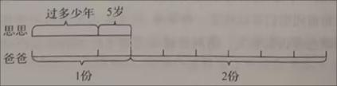
解析：
】 (第一步)把他们的书本数画出来 :
第二步：从 图中得出,思思现在有书5+3=8(本),思思现有书的2倍是8×2=16( 本)
第三步：加上想想分享 给思思的3本得出想想原来 带的书是16＋3=19(本)
24平方米。 这块三角形土地原来的面积是多少?
【

解析：
】
第一步：只把底增加 4米,面积增加24平方米的 时候,高不变,可求出高 =24×2÷4=12( 米)
第二步：只把高增加 6米,面积增加24平方米的 时候,底不变,可求出底 =24×2÷6=8( 米)。
第三步：三角形土地原来的面积为12×8÷2=48( 平方米)。
5放入下层,上、下
层的本数就相等了。上、下 层原来各放 书多少本？
【

解析：
】方法 1:
第一步：画出 线段图。
第二步：从 图中可知，上 层原来有 5份，下层原来有 3份,求出每份的本数
160÷(5+3)=20( 本)。
第三步：上 层原有5×20=100( 本)，下层原有3×20=60( 本)。
方法2:
第一步：当上、下两 层的本数相等 时，上、下两 层各放书160÷2=80( 本)。
第二步：由于把上 层本数的1
5放入下层,这时80本只相当于上 层原来本数的 1−1
5=4
5 。
第三步：按 这个对应关系,求出上层原来的本数 80÷1
5=100
第四步：用 总本数减去上 层的本数,剩下的就是下 层原来的本数 160-100=60。
31的分子与分母各加上同一个数后 ，得到5
7，所加的数是多少 ？
【

解析：
】
第一步：分子与分母加上 同一个数，分子与分母的差没有改 变。
第二步：原分数的分子与分母之比是 19：31，分子与分母相差 12。
第三步： 现在分数的分子与分母之比是 5：7，分子与分母相差 2。
第四步：把 现在分数的分子与分母之差 扩大6倍，成为12。分子与分母也相 应扩大6倍，
它们的比调整为30:42。
第五步：分子与分母的比从 19:31调整为30:42，分子与分母都增加了 11，因此所加的数
是11。
甲队比乙队少10人;如果从两个 队各调出25人,则乙队剩下的人数是甲 队剩下人数的3
5。
甲、乙两个工程 队原来各有多少人 ?
【
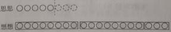
解析：
】
第一步：甲 队比乙队多25×2-10=40(人)。
第二步：各自 调走25人后,两队的人数差 还是40人。
第三步：将 “甲队剩下人数 ”看作单位“1”,则乙队剩下3
5,可得甲队剩下的人数 为40÷(1
－3
5 )=100。
第四步：甲 队原来有100＋25=125(人)，乙队原来有125-40=85(人)。
不变量思想的关 键是"在变化中找到不变"。常见不变量：年龄差不变、总量守恒、
某几个量的和 /差不变。遇到动态问题 ，先问自己：什么 东西是不变的？找到它，
问题就迎刃而解。
【老师说】
①找不到不变量；②误把变化的量当成不变量；③不变量的使用条件不明确。
【易错点提醒】
总结：不变量思想是在 变化过程中寻找始终保持不变的量。如 总量不变、差不变、
某几个量的和不变等。找到不变量是解题的关键突破口，常用于年 龄问题、盈亏问
题等。
二十五、面积法
方法介绍
运用面积关系来解决 问题的方法，称为面积法。面积法可以将几何、代数 、概率等知 识关
联起来,将所学的知 识融会贯通。
面积法常用的解题思路有:(1)在图形问题中通过面积转化，等积变形等方法 ,巧妙解决 问
题;(2)在路程、 浓度、平均数、 鸡兔同笼等数学问题中,将数量关系与 长方形中的 长、宽
及面积相对应,以形解数 ,使复杂问题直观化、简单化。
思维挑战
一条高AF=28厘米,求另一条高 AE的长。
【

解析：
】
第一步：由 AF是CD边上的高,可以计算出平行四 边形的面积为24×28=672( 平方厘米 )。
第二步：由 AE是BC边上的高,可得平行四边形的面积为BC×AE=32×AE
第三步：由 32×AE=672( 平方厘米 )可得AE=672÷32=21( 厘米)。
如果长不变，宽减少3米，那么它的面积减少36平方米。 请问这个长方形原来的面积是
多少平方米 ?
【
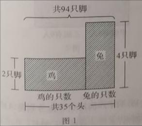
解析：
】
第一步：由 “宽不变,长增加6米,那么它的面积增加54平方米”可知它的 宽是
54÷6=9( 米)
第二步：由 “长不变,宽减少3米,那它的面积减少36平方米”可知它的 长为
36÷3=12( 米)。
第三步：原 长方形的面积是12×9=108( 平方米)。
克,请问商店需要多准 备几个筐?
【
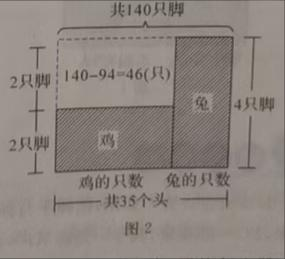
解析：
】
第一步：如 图,以长方形ABFE的长表示20筐,宽表示每筐装的28千克,以长方形ADCH的
长表示分装后需要的筐数 ,宽表示分装后每筐装 28－8=20(千克)。
第二步：由 长方形ABFE的面积=长方形ADCH的面积,可知AD=28×20÷20=28 。
第三步：商店 还需要多准 备28-20=8(个)筐。
驶了一段时间，然后将速度降低到每分 钟250米，到达B地共用时24分钟。请问甲出发
后几分钟开始降速 ？
【
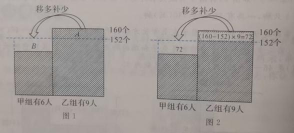
解析：
】
第一步：如 图，根据题意画图，补成大长方形，这样相当于24分钟的速度都是 350米/分
钟，一共行 驶了350×24=8400( 米)。
第二步：右上角的 长方形面积相当于比 实际多行的8400-8000=400( 米)。
第三步： 这个长方形的宽就是前后速度差 350-250=100( 米/分钟)，它的长(后一段时间)是
400÷100=4( 分钟)，那么前一段 时间是24-4=20(分钟)，即出发后20分钟开始降速。
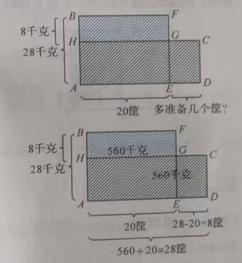
解析：
已知女生的平均成 绩是92分，求男生的平均成 绩。
【
解析：
】
第一步：如 图，先计算出女生超 过全班平均成 绩的总分数，用长方形A的面积表示。A的
长表示女生有 21人，宽表示女生的平均成 绩比全班平均成 绩多92-
第二步： A的面积为(92-
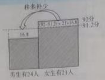
解析：
积=B的面积,可知B的宽为
解析：
第四步：所以男生的平均成 绩为
解析：
面积法的核心是利用面积关系建立等式。常用技巧：同底等高 →面积相等；等底
同高→面积比=底边比。面积法在几何 证明中特别有用，能用面积解决的问题往往
比纯几何方法更 简洁。
【老师说】
①面积公式记混（特别是三角形忘了 ÷2）；②底和高不 对应；③面积比和边长比
的关系搞 错。
【易错点提醒】
总结：面积法是利用 图形面积之间的关系来求解 问题。通过同一个图形的不同面
积计算方式建立等式，或利用面积比等于底 边比（等高 时）等性质。关键是要灵活
运用面积公式和面积关系。
解析：
二十六、各取一半
方法介绍
通过几个量之 间相同的“倍”或“半”的关系,从整体上理解 问题,进而解决问题,这样的
方法称为各取其半。
各取其半可以借助数形 结合、逻辑推理，将复杂问题转化为简单问题 ，将未知 问题转化为
已知问题。在实际问题 中,这个“半”可以是,也可以是其他数 值。
典型示例
米到C市吃午饭。由于道路 拥堵，中午才赶到一个小 镇D，只行驶了原计划的三分之一。
过了小镇，汽车行驶了400千米，傍晚才赶到 E地停下来休息。司机 说再行驶从C市到这
里的二分之一路程 ，就到达B市了。求 A，B两市的距离。
想一想： C市把A，B两市的路程分成了 AC和CB两段。D，E又在这两段的什么位置 ？
【解析】
第一步：由 题意可知，点D是AC 的三等分点 (靠近点A)，点E是CB的三等分点 (靠近点
B)。
第二步：所以 DC = 2
3 AC,CE = 2
3CB。
第三步： DE=DC+CE = 2
3AC+2
3CB = 2
3AB。
第四步：因为D,E两地距离 为400千米,所以A、B两市之间的距离是 400÷2=600(千米)
思维挑战
(第一步)因为点D为AC中点,
点E为BC中点。
第二步：所以 DE=DC-EC=1
2AC-1
2BC=1
2AB
第三步：又因为DE=5cm,所以AB=10 cm 。

解析：
【

解析：
】
第一步：∠DOE=∠DOC－∠EOC
第二步：因为射线OD平分∠AOC,射线OE平分∠BOC。
第三步：所以∠DOE=∠DOC－∠E0C=1
2∠AOC－1
2∠BOC=1
2∠AOB=1
2×70o=35o。
面积。
【
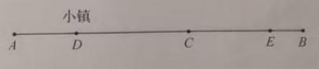
解析：
】
第一步： 长方形AEFD内三个阴影三角形的面积之和= 1
2 S长方形AEFD，长方形BCFE内两个阴
影三角形的面积之和= 1
2 S长方形BCFE
第二步： 所以阴影部分的面积= 1
2 S长方形AEFD+1
2 S长方形BCFE= 1
2 S长方形ABCD=18（cm2）。
B),点G为EC的三等分点 (靠近点C),点H为AD上任意一点。已知 ∆HFG的面积为8cm2,求
长方形ABCD的面积。
【

解析：
】
第一步:由题意可知,EF=2
3BE ,EG=2
3EC,所以FG=FE+EG=2
3BE+2
3EC= 2
3BC.
第二步：又因为S长方形ABCD=BC×AB，S∆HFG=1
2×FG×AB=1
2×2
3BC×AB。
第三步：所以S长方形ABCD=S∆HFG÷1
2÷2
3 =24(cm2)。
如图,已知正方形 CDEF的边长为6cm,Bl平行于正方形的一条 边，∆ABC的面
积为8cm2,求∆GCD的面积。
【解析】
第一步：如 图,过点G作BI的垂线,交ED,FC于点L,M。
第二步:因为S∆ABG=S长方形BGLE ,S∆BGC=S长方形BFMG。
第三步:所以S长方形=2×S ∆ABC=2×8=16(cm2)。
第四步:S长方形LMCD=S正方形 EFCD－S长方形EFML=6×6-16=20(cm2)
第五步：所以 S∆GCD=S长方形LMCD=×20=10(cm2)。
各取一半的思想源于 对称性。中点、平均数、角平分 线都是"各取一半 "的体现。遇
到对称问题，抓住"一半"这个关键，整体就好理解了。画 图标注中点和 对称轴，思
路会更清晰。
【老师说】
①"一半"找得不对；②对称性判断出 错；③中点位置 计算错误。
【易错点提醒】
总结：各取一半的思想是将整体分成相等的两部分，通 过分析一半来推知整体。
常用于对称问题、平均数 问题、中点问题等。关键是要找到合理的 "一半"，利用对
称性或平均性 质简化问题。
二十七、裂项相消
方法介绍
在求若干 项的和时，把每项进行拆分，重新 组合后消去一些 项，从而简化计这样的方法称
为裂项相消法。
裂项相消法是分解与 组合思想在求和 问题中的具体 应用，常用的公式如下。
1
n×(n+1)=1
n−1
n+1
1
𝑛×(𝑛+𝑎)=1
𝑎×(1
𝑛−1
𝑛+𝑎)
1
𝑛×(𝑛+1)×(𝑛+2)=1
2×[1
𝑛×(𝑛+1)−1
(𝑛+1)×(𝑛+2)]
n×(n+1)=1
3[n×(n+1)×(n+2)−(n−1)×n×(n+1)]
典型示例
1×2+1
2×3+1
3×4+...+1
9×10 。
想一想:观察相邻两项的特点,有什么发现吗?
【解析】
第一步：1
1×2+1
2×3+1
3×4+...+1
9×10
=(1
1−1
2)+(1
2−1
3)+...+(1
9−1
10)
第二步：=1−1
10=9
10 。
2×3×4+1
3×4×5+1
4×5×6+1
5×6×7+1
6×7×8。
想一想 从第一项开始研究 ,怎样裂项才能相互抵消呢 ?
【解析】
第一步：1
2×3×4+1
3×4×5+1
4×5×6+1
5×6×7+1
6×7×8
=(1
2×3−1
3×4)×1
2+(1
3×4−1
4×5)×1
2+...+(1
6×7−1
7×8)×1
2
第二步： (1
2×3−1
3×4)×1
2+(1
3×4−1
4×5)×1
2+...+(1
6×7−1
7×8)×1
2
=（1
2×3−1
3×4+1
3×4−1
4×5+...+1
6×7−1
7×8）×1
2
第三步：（1
2×3−1
7×8）×1
2 =25
336 。
想一想：分数可以裂项相消,整数该怎样裂项才能相互抵消呢 ?
【解析】
第一步：因为1×2 = 1
3×(1×2×3-0×1×2),
2×3= 1
3×(2×3×4－1×2×3),
3×4= 1
3×(3×4×5-2×3×4)，
99X100= 1
3×(99×100×101－98×99×100)
第二步：以上式子整体相加，可得
1×2+2×3+3×4+…+99×100
=1
3×[(1×2×3−0×1×2)+(2×3×4−1×2×3)+(3×4×5−2×3×
4)+...+(99×100 ×101 −98×99×100)]
= 1
3×99×100 ×101
=333300。
思维挑战
6+1
12+1
20+1
30+1
42+1
56+1
72+1
90。
【
解析：
】
第一步：原式 = 1
2×3+1
3×4+...+1
9×10
第二步： = 1
2−1
3+1
3－1
4+1
4+⋯+1
9−1
10 。
第三步： = 1
2−1
10 = 2
5 。
1×4+1
4×7+1
7×10+...+1
40×43。
【
解析：
】
第一步： = 1
3×(1−1
4+1
4−1
7+1
7−1
10+⋯+1
40−1
43) 。
第二步：1
3×(1−1
43) = 14
43 。
1×3+1
2×4+1
3×5+...+1
99×101
【
解析：
】
第一步： = 1
2×(1−1
3)+1
2×(1
2−1
4)+1
2×(1
3−1
5)+⋯+1
2×(1
98−1
100)+1
2×(1
99−1
101) 。
第二步： = 1
2×[(1+1
2)−(1
100+1
101)]。
第三步： = 1
2×14949
10100=14949
20200 。
1×2×3+1
2×3×4+1
3×4×5+...+1
98×99×100 。
【
解析：
】
第一步： =1
2×(1
1×2−1
2×3)+1
2×(1
2×3−1
3×4)+1
2×(1
3×4−1
4×5)+⋯+1
2×(1
98×99−
1
99×100)。
第二步： =1
2×(1
1×2−1
99×100)=4949
19800 。
【
解析：
】
第一步： =1×3+[(3×5×7 -1×3×5)+(5×7×9 -3×5×7)+…+(99×101×103 -
97×99×101)]÷6
第二步： =3+（99×101-1×3×5）÷6
第三步： =3+（1029897-15）÷6
=3+1029882÷6
=3+171647
=171650。
裂项相消 的核心公式： 1/(n×(n+1)) = 1/n - 1/(n+1)。公差为k时：
1/(n×(n+k)) = (1/k)×(1/n - 1/(n+k)) 。裂项后大部分 项会抵消，关 键是算准
剩下的首尾几 项。
【老师说】
①裂项公式记错；②首尾项遗漏或重复； ③公差不是 1时裂项公式不会 调整。
【易错点提醒】
总结：裂项相消是将分数拆分成两 项之差，使得相 邻项相互抵消，从而 简化求和。
常见形式：1/(n×(n+1)) = 1/n - 1/(n+1)。关键是要准确裂项，注意首尾 项不要
遗漏。
二十八、数形结合
方法介绍
数形结合就是根据数与形之 间的对应关系,通过数与形的相互 转化来解决数学 问题
的方法。
著名数学家 华罗庚曾说:“数缺形时少直观,形少数时难入微。”数形结合将抽象的
数学语言与直观图形相对应，使抽象思 维与形象思 维相结合,通过“数”与“形”
之间的转化来解决 问题,数形结合包括“以数解形 ”和“以形助数 ”
典型示例
有多少根 ?
想一想: 每一层的钢管数量有怎 样的规律呢?
【解析】
第一步：如 图,假设有一堆同 样的钢管倒放在原来 这堆钢管的
旁边。
第二步： 这两堆钢管一共有 n层,每层有(n+1)根,共有n×(n+1)根。
第三步：所以 这堆钢管一共有 1+ 2 +…+ n = 𝑛×(𝑛+1)
2 (根)
想一想: 根据12=1, 22=2 + 2, 32=3＋3＋3, n2用加法式子可以怎么表示呢 ?
【解析】
第一步：如 图1,图中所有数字的和就是 12+22+…+2n。
第二将图1分别变换,得到图2和图3。
第三步：将 图1,图2,图3中对应位置的数字相加 ,得到图4。
第四步： 图4中所有数的和是 3×(12＋22+32+…+n2)=n ×(n+1) ×(2n+1)/2,
所以 12+22＋32+…＋n2= 𝑛(𝑛+1)(2𝑛+1)
6 。
思维挑战
他们研究过图1中的1,3,6,10，…,由于这些数能够表示三角形 ,于是将其称为三
角形数;类似地,称图2中的1,4,9,16 ,…,这样的数称为正方形数，下列数中既是
三角形数又是正方形数的是（ ）。
A.289 B. 1024 C.1225 D.1378
【

解析：
】
第一步： 289=172, 1024=322,1225=352,1378不是正方形数 ,排除 D选项。
第二步： 1225=1＋2＋3＋…＋49，289和1024都不是三角形数。所以 选C。
7个图中,白色瓷砖有几块?
【

解析：
】
第一步：假设白色瓷砖的边长为1,求几块白色瓷砖就等于求白色瓷 砖的总面积。
第二步：第 1个图中白色瓷 砖的长为2，宽为1,面积为1×2=2;第2个图中白色瓷 砖的长
为3,宽为2,面积为2×3=6;第3个图中白色瓷 砖的长为4,宽为3,面积为3×4=12; 同理可
得,第n个图中白色瓷 砖的长为(n＋1),宽为n,面积为n×(n+1) 。
第三步： 综上所述,第七个图中白色瓷 砖的面积为7×8=56，即56块白色瓷砖。
【
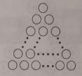
解析：
】
第一步：正方形数从一点出 发,按如图所示的方法划分出 3,5,7,….,2n -1。
第二步：前 n个正奇数的求和公式 1＋3＋5＋…＋(2n-1)= n2。
【
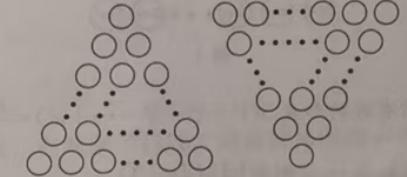
解析：
】
第一步：把 钟面分成60小格,分针的速度是 1小格/分钟,时针的速度是一小格 /分
钟。
第二步：从 8点到两针第一次垂直 时:分针比时针多走的“路程”是40-15=25(小
格)
第三步：算出追及 时间是25÷(1－1
12)=273
11(分),所以钟表的时针与分针在8时273
11
分第一次垂直。
片。现把三角形以 每秒2厘米的速度向右平移 ,直至三角形移出 长方形。根据三角
形盖住长方形的面积变化,画出了下面的 统计图。请问这个长方形的面积是多少平
方厘米?
【
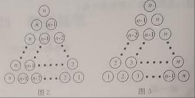
解析：
】
第一步：根据 统计图可知,第5-7秒时三角形完全覆盖住 长方形,可得三角形的面积等于
24(平方厘米 )。
第二步：第 2-5秒时,三角形和 长方形从开始覆盖到完全覆盖 ,可以得出三角形的底 边为
(5-2)×2=6( 厘米);于是三角形的高 为24÷6÷1
2 = 8(厘米),即长方形的宽也为8(厘米)。
第三步：第 7秒时(如图2),三角形已 经运动到长方形最右端 ,可以计算出长方形的长为(7-
2)×2=10( 厘米),所以长方形的面积等于10×8=80( 平方厘米 )。
数形结合是最重要的数学思想之一。 "数缺形时少直观，形少数 时难入微。"遇到
抽象的数量关系，画个 图看看；遇到复杂的图形问题，算一算数据。 线段图、示意
图、坐标图都是好帮手。
【老师说】
①画图不准确， 导致判断出 错；②图形和数量关系 对应不上；③线段图的比例不 对。
【易错点提醒】
总结：数形结合是将数量关系与 图形直观结合起来的解题方法。通 过画图使抽象
的数量关系形象化，或通 过计算使图形问题精确化。关 键是要善于用 线段图、示意
图等辅助思考。
二十九、分类讨论
方法介绍
把研究的 对象按照一定的 标准进行分类并逐类进行讨论，再把每一 类的结论综合,使问题
得到解决的方法称为分类讨论法。
分类讨论法的实质是把问题分而治之，其分类规则和解题步骤是各个击破综合归纳，具体
要求是:(1)根据研究的需要确定同一个分类标准;(2)恰当地对研究对象进行分类,做到既
不重复又不 遗漏;(3)逐类逐级进行讨论;(4)综合括、归纳得出最后 结论
典型示例
想一想： 有多少种不同 边长的正方形 ?
【解析】
第一步：如 图1,含有★的“1×1” 的正方形有 1个。
第二步：如 图2,含有★的“2×2” 的正方形有 4个。
图2
第三步：如 图3,含有★的“3×3” 的正方形有 4个。
第四步：如 图4、含有★的“4×4” 的正方形有 4个
第五步：如 图5,含有★的“5×5” 的正方形有 1个
第六步：所以含有 ★的正方形共有 1＋4＋4＋4＋1=14个
管子在距离底部 6cm处连通(不计管子粗细)。已知A中有水，水位高 为4cm。若每分 钟向
B中注人1cm高的水,请问几分钟后,A与B的水位高度之差是 1cm?
想一想: A与B的水位高度之差是 1cm时,有多少种不同的情况 ?
【解析】
第一步：如 图1,当B的水位比 A低1cm时,4-1=3(分钟)
第二步：如 图2,当B的水位比 A高1cm,且A的水位不变时,4+1=5(分钟)
第三步：如 图3,当B的水位比 A高1cm,且A的水位上升 1cm 时，=7(分钟)。
第四步： 3分钟、5分钟或者7分钟后,A与B的水位高度之差是 1cm。
思 维 挑 战
1.☆☆☆☆☆ 公园中,银杏树、梧桐树和柳树三棵大树排成一排 ,引人注目。其中 银杏树和
梧桐树相距180米,柳树和梧桐树相距90米。那么 银杏树柳树相距多少米 ?
【解析】
第一步：如 图1当银杏树、柳树分别在梧桐树的两侧时,银杏树和柳树相距180＋
90=270(米)
第二步：如 图2,当银杏树、柳树分别在梧桐树的同侧时,银杏树和柳树相距180-
90=90(米)。
第三步：所以 银杏树和柳树相距270米或90米。
2.☆☆☆☆☆ 沿着直线剪去长方形的一个角 ,请问还有几个角 ?
【解析】 (第一步)如图1,剪去一个角 ,成为三角形,还有三个角。
第二步：如 图2.减去一个角 ,成为四边形,还有四个角。
第三步：如 图3,减去一个角 ,成为五边形,还有五个角。
第四步：所以 还有三个角 ,四个角或五个角。
3.☆☆☆☆☆ A,B 两地相距 720千米,两辆车从两地同 时相对开出,甲车每小时行驶50千
米,乙车每小时行驶70千米。行 驶几小时后两车相距120千米?
【解析】
第一步:如图1,两车相遇前相距 120千米,(720-120)÷(50+70)=5( 小时)。
第二步:如图2,两车相遇后相距 120千米,(720+120)÷(50+70)=7( 小时)。
第三步:所以行驶5小时或7小时后两车相距120千米
4.☆☆☆☆☆ 在一个400米长的操场跑道上,思思和想想同 时从同一个地点出 发,思思每
分钟走60米,想想每分 钟走40米。两人几分 钟后相遇?
【解析】
第一步:当两人相背而行 时,400÷(60 ＋40)=4(分钟)
第二步:当两人相向而行 时,思思需要超 过想想1圈才能相遇 ,400÷(60 -40)=20(分钟)。
第三步:两人4分钟或20分钟后相遇。
5.☆☆☆☆☆☆ 如图,实验室里水平桌面上有甲、乙、丙三个 圆柱形容器 (容器足够高),
底面半径之比 为1:2:1,用两个相同的管子在容器的 5厘米高度 处连通(即管子底端距离容
器底部5厘米,不计管子粗细)。现三个容器中只有甲中有水 ,水位高1厘米。若每分 钟同
时向乙和丙注入相同量的水 ,开始注水 1分钟,乙的水位上升5
6厘米。开始注水几分 钟后,甲
与乙的水位高度之差是 0.5 厘米。
【解析】
第一步：甲、乙,丙三个圆柱形容器的底面半径之比 为1:2:1,因为注水1分钟乙的水位上
升5
6厘米,所以注水 1分钟丙的水位上升10
3厘米。
第二步：如图1,当乙的水位比甲低 0.5厘米时,0.5÷5
6 = 3
5(分钟)
第三步：如图2,当乙的水位比甲高 0.5厘米,甲水位不变时，
1.5÷5
6 =1.8(分钟),18×10
3=6>5(厘米),此时丙容器的水溢入乙容器。 经过5÷10
3 = 3
2(分钟)
丙容器的水达到管子底端，接 下来一段时间内,向丙容器注人的水也流人乙容器 ,乙容器的
水上升速度 为5
6×2 = 5
3(厘米/分钟)。
此时乙的水位上升5
6×3
2=5
4厘米,所以(1.5−5
4)÷5
3+3
2=33
20(分钟)
第四步：如 图3,当乙的水位比甲高 0.5厘米,甲的水位上升 时,此时甲、乙、丙二个容器的
水位高分 别为4.5厘米、5厘米、5厘米。
乙的水位到达管子底端 时,需(5-5
4)÷5
3+3
2=15
4(分钟)。
接下来一段 时间内向乙和丙容器注人的水均流入甲容器 ,甲容器的水位上升速度 为10
3×2 =
20
3(厘米/分钟)，所以(5-1-0.5)÷ 20
3 + 15
4 = 171
40(分钟)
第五步：注水3
5分钟,33
20分钟或171
40分钟,甲与乙的水位高度差 为0.5厘米
分类讨论要做到"不重不漏 "。分类标准要统一，每一 类要独立讨论。讨论完后要综
合各类结果。常见分类依据：按数 值大小、按奇偶性、按 图形类型等。分类讨论是
严谨思维的体现。
【老师说】
①分类标准不统一；②各类之间有重叠； ③遗漏某类情况；④讨论完忘记汇总。
【易错点提醒】
总结：分类讨论是将问题按照某个 标准分成若干 类，分别求解后再 综合。关键是
要做到分类标准统一、不重不漏。每一 类都要独立求解，最后将各 类结果合并或比
较。
三十、单位化
方法介绍
将一段路程、一 项工程、一筐苹果、一段 时间等视为一个整体或一个 单位以此来解决 问题
的方法,称为单位化。
在工程问题、水管问题、牛吃草 问题等抽象性 问题中,往往可以假设单“1”,构建等量关
系来解决 问题。
典型示例
队合种,5天能种完 吗?
试一试
想一想 除了用工作 总量“300棵”来解决问题,还有其他办法吗?
【解析】
第一步： 设工作总量为“1”,工作效率 =工作量÷工作时间,算出两队的效率。甲 队的种植
效率为1÷8 = 1
8 ,乙队的种植效率 为1÷10= 1
10
第二步：两 队合作的种植效率 为1
8＋1
10 = 9
40 。
第三步：两 队合作种植所需天数 为1÷9
40 = 40
9。
第四步：因 为计算结果 <5,所以两队合种5天能种完。
另有任务,甲队再单独做9天完成。 这项工程如果由甲 队单独做,需要多少天完成 ?
想一想： 设工程总量为”1”,甲队最后9天的工作 总量是多少呢 ?
【解析】
第一步：设工程总量为“1”,甲队最后9天的工作量 为1－1
30×27 = 1
10。
第二步：甲队每天的工作效率 为1
10÷9 = 1
90 。
第三步：这项工程如果由甲 队单独做，需要 1÷ 1
90 = 90(天)。
管。当打开 4根进水管时,需要5小时才能注满水池;当打开2根进水管时,需要15小时才
能注满水池。现在需要在 2小时内将水池注 满,那么最少要打开几根 进水管?
想一想：在水池又 进水又排水的状 态下,如何计算进水效率与排水效率呢
【解析】
第一步：设水池的容量 为“1”。4根进水管效率 -1根排水管效率1
5，2根进水管效率 -1根
排水管效率 =1
15 。
第二步：转化上面两个式子 ,得到进水管效率 为(1
5－1
15)÷(4－2)= 1
15，排水管效率 为 4×1
15
－1
5 = 1
15。
第三步：要求在两小 时内注满水池,则一小时内必须注入水池的一 ,同时还需要补上排水管
一小时的排水量1
15,得到(1
2+1
15)÷1
15 = 8.5(根),所以最少要打开 9根进水管。
思 维 挑 战
1.☆☆☆☆☆ 有一批零件 ,甲单独做6小时完成,乙单独做8小时完成。现在两人合作 ,完
成任务时甲比乙多做 24个,问这批零件共有多少个 ?
【解析】将 这批零件总的工作量 记为单位“1”,可以计算出甲、乙效率之比和甲、乙合作
所需要的 时间,找出等量关系 进而可以计算出总量。
第一步：根据工作效率 =工作总量÷工作时间,得甲队工作效率 为1÷6=1
6,乙
队工作效率 为1÷8=1
8 ,甲、乙两 队合作的工作效率 为1
6＋1
8=7
24 。
第二步:根据工作 时间=工作总量÷工作效率,得甲、乙两 队合作所需 时间为1÷7
24=24
7 。
第三步：计算每小时甲比乙多做的零件个数、甲与乙的效率之比 ,找到等量关系从而 计算
出工作总量。每小 时甲比乙多做零件数 为24÷24
7 = 7(个),零件总量为7÷(1
6−1
8)=168(个)。
2.☆☆☆☆☆☆ 规定两人轮流做一项工程,每人做一小 时后交换,如此反复 ,做完为止。如
果按甲、乙 轮流的顺序做这项工程需要 9.8小时;如果按乙、甲 轮流的顺序做同样的工程
只需要9.6小时。请问乙单独做这项工程需要多少小 时?
【解析】 这是交替工作 类型的工程 问题,求解问题的关键是根据题意得到两人工作效率的
关系,然后转化成一个人的工程 问题。根据题意,甲、乙轮流做与乙、甲 轮流做需要的 时间
不同,根据最后相差的 时间可求得甲、乙两人的工作效率之比。
第一步：分析题意,①甲乙轮流做:甲Z甲乙……甲乙,即甲做了 5小时,乙做了4.8小
4、6小时,时;②乙甲轮流做:乙甲乙甲 ……Z甲,即乙做了 5小时,甲做了
第二步：比较两种做法，得到甲做 5－4.6=0.4( 小时)与乙做5-4.8=0.2( 小时)的工作量相
等,故甲工作 2小时相当于乙工作 1小时的工作量。
第三步：所以将①甲乙轮流做(或者②）的时间进行转化即可得到乙 单独做这项工程需要
的时间:2.5+4.8=7.3( 小时)。
3.☆☆☆☆☆☆ 一个水池装有 3根水管,甲是进水管,乙和丙都是出水管。如果 单独打开乙
管,20分钟可将整池水放完 ;如果单独打开丙管 ,30分钟可将整池水放完。 现在水池已注 满
水,同时打开甲、乙、丙三管 ,18分钟可将水放完，如果只打开甲、乙两管 ,多少分钟可将
整池水放完 ?
【解析】 题目中的第一种情况是三管合 计工作效率 为,已知乙管、丙管的工作效率，可以
理解为甲管降低了放水的效率 ,由此得到甲管的工作效率。
第一步：乙管、丙管合作放水的工作效率 为1
20+1
30=1
12,甲管的工作效率 为1
12−1
18=1
36 ;
第二步：分析第二种情况 ,甲管进水,乙管放水。甲管、乙管合作放水的工作效率 为1
20−
1
36=1
45 此时放完水需要的 时间为1÷1
45=45(分钟)。
4.☆☆☆☆☆☆ 牧场上有一片青草 ,每天青草都匀速生 长。这片青草可供 10头牛吃20天,
或者可供 15头牛吃10天。这片青草可供 25头牛吃几天
【解析】
第一步： 设1头牛1天吃的草量 为“1份”,分析两种情况可知 :前后两次青草的量相差
10×20-15×10=50( 份)；
第二步：多出来的草量 50是第二种 情况比第一种情况多的 10天生长出来的，所以每天生
长的草量为50÷10=5(份)；
第三步：原有草量 为10×20-5×20=100( 份)或15×10-5×10=100( 份)；
第四步：分析新情况 ,原有草量 可供25头牛吃100÷(25 -5)=5(天)，所以这片青草可供 25
头牛吃5天。
5.☆☆☆☆☆☆ 有一个牧 场,21头牛20天可将草吃完 ,25头牛15天可将草吃完。 现有若
干头牛吃草,吃了6天草后,牧场卖了4头牛,余下的牛再吃 2天将草吃完 ,问原有牛多少 头?
（如图所示）
【解析】根据 题干两种情况可以求出草每天生 长的速度;根据草每天生 产的速度,可求出牧
场原有的草量 ;根据牧场每天生长的草量不变,与一头牛每天吃的草量不变,即可以求出原
有牛的头数。
第一步： 设1头牛1天吃的草量 为"1份”,前后两次青草的量相差 21×20-25×15=45( 份),
每天生长的草量为45÷(20-15)=9(份)。
第二步：牧场原有草量 为(21-9)×20=240( 份)。
第三步： 现情况是总共吃了8天,则草量为240+8×9=312( 份)。
第四步：假设4头牛没被卖出，则已有草量不足 ,缺少草量 为4×2=8(份)。所以假设现有
草量为312＋8=320(份)牛的数量 为320÷(6＋2)=40(头)。
单位化是解决分数 应用题的万能钥匙。关键是找准单位"1"（通常是 "全部""总量
"），然后理清各部分占 单位"1"的几分之几。工程 问题中，把工作 总量设为1，效
率就是时间的倒数。
【老师说】
①单位"1"设错；②各部分与 单位"1"的关系搞混； ③分数除法 计算出错。
【易错点提醒】
总结：单位化是将某个量 设为"1"或一个单位，以此 为基准来分析其他量。常用于
分数应用题、工程问题、比例问题等。关键是选好单位"1"，理清各部分与 单位"1"
的关系。
三十一、倒数法
方法介绍
通过研究原数的 倒数来解决问题的方法称为倒数法
倒数法的使用方法主要有 :(1)交换一个分数的分子和分母，得到原数的数 ;(2)用1去除以
原数,得到原数的倒数 ;(3)交换原算式的除数和被除数，得原算式的倒数。
典型示例
25与11
23大小。
试一试
想一想 能否用取倒数的方法来比较大小?
【解析】
第一步：12
25的倒数为25
12, 11
23的倒数为13
11 。
第二步：图为25
12=2+1
12,23
11=2+1
11 。
又因为1
12<1
11,所以25
12<23
11 。
第三步：因此12
25>11
23 。
12÷(1+1
2+1
3+1
4) 。
想一想：交 换原算式的除数和被除数 ,有什么发现吗?
【解析】
第一步：因 为(1+1
2+1
3+1
4)÷1
12=(1+1
2+1
3+1
4)×12=12＋6＋4＋3=25 。
第二步：所以1
12÷(1+1
2+1
3+1
4)=1
25 。
𝑎,如果分母加 7,得4
15;如果分母减 7,得2,求这个分数。
试一试
想一想：𝑏
𝑎+7和𝑏
𝑎−7有相同的分数 单位吗?如果没有 ,可以怎么 转化呢?
【解析】
第一步：由 题意得，𝑏
𝑎+7=4
15,𝑏
𝑎−7=1
2 ,
第二步:取倒数后得 ,𝑎+7
𝑏=15
4, ①
𝑎−7
𝑏=2, ②
第三步：由① ＋②得, 𝑎+7
𝑏+𝑎−7
𝑏=15
4+2=23
4 ,所以𝑎
𝑏=23
8 。
第四步：所以 这个分数为 𝑏
𝑎=23
8 。
思维挑战
217与69
205的大小。
【
解析：
】
第一步：73
217的倒数为217
73，69
205的倒数为205
69；
第二步：因为217
73=3-2
73,205
69=3-2
69 ，又因为2
73<2
69 ，所以217
73>205
69 。
第三步：因此73
217<69
205 。
48÷(2
3+3
4+5
6+7
16)。
【
解析：
】
第一步：因 为(2
3+3
4+5
6+7
16)÷1
48 =(2
3+3
4+5
6+7
16)×48=32+36+40+21=
48÷(2
3+3
4+5
6+7
16)=1
129 。
解析：
求这个分数。
【
解析：
】
第一步：设这个分数为𝑏
𝑎 ,
第二步:由题意得𝑏
𝑎+9=3,𝑏
𝑎+16=2；
第三步:取倒数后得𝑎+9
𝑏=1
3,𝑎+16
𝑏=1
2 ；
第四步：𝑎+9
𝑏 －𝑎+16
𝑏=1
6，所以 𝑏=42;
第五步：将 b=42代入𝑏
𝑎+9=3，得 𝑎=5 ,
第六步：所以 这个分数为42
5 。
比思思少 20%,想想每分 钟走多少米 ?
【
解析：
】
第一步：假设路程为“1”则每个人行走的速度和所用 时间互为倒数,想想所用 时间比思思
少20%,则想想所用 时间为思思所用 时间的(1-20%)。
第二步：因此,想想行走的速度是思思行走速度的1
1−20% 。
第三步：64×1
1−20%=80(米)。
用时是原计划的20%,请问实际 效率比原 计划增加了多少 ?
【
解析：
】
第一步：假设工作总量为“1”,则工作效率和工作 时间互为倒数。
第二步：实际用时是原计划的20%,则实际效率为原计划的1
20%=5(倍)，
第三步：实际效率比原 计划增加(5-1)×100%=400% 。
倒数法的核心： a÷b = a×(1/b) 。比较大小时，如果两个数都接近某个整数，取
倒数后更容易比较。记住：正数中，倒数越大原数越小。倒数法在分数比较和除法
化简中特别好用。
【老师说】
①求倒数时分子分母搞反； ②比较大小时忘了"倒数大原数小 "的结论；③除法变乘
法时忘记取倒数。
【易错点提醒】
总结：倒数法是利用倒数的性 质来简化计算或比较大小。a÷b = a×(1/b) ，通过
求倒数可以将除法 转化为乘法。在比较大小时，有时求倒数后更容易判断。关 键是
要熟练掌握倒数的运算 规则。
三十二、比例思想
方法介绍
比例思想就是用数量之 间的比例关系来解决 问题的方法。
应用比例思想解决 问题常常用份数之比来代替两个 实际量之比，以反映 这两个实际量
之间的关系,往往可以突破 单一的思维,促进对问题 解决策略的多 样化研究。
典型示例
1.6m,影长1.2m,同一时刻测得一竹竿影 长为3m,你能算出竹竿的高度 吗?
想一想： 此题表示同一 时刻同一地点 ,物体高度和物体影 长的比值不变,所以
竹杆高度
竹竿影长=物体高度
物体影长
【解析】
第一步： 竹竿高度
3=1.6
1.2 。
第二步：竹竿高度 =1.6×3÷1.2=4 （m）。
2.☆☆☆☆☆☆ 如图，一个长方形被两条直 线分成四个 长方形,其中三个 长方形的面积
分别是20公顷、25公顷和30公顷。求阴影部分的面积。
25 20
30
想一想： 当长方形的长一定时,长方形的面积与宽之间存在怎样的比例关系呢 ?
【解析】
第一步：因 为 25
阴影部分面积=20
30 ，，
第二步：所以阴影部分面积为25×30＋20=37.5( 公顷)。
BD:DC=l:2,AD 与BE交于点F。求四边形 DFEC的面积。
想一想：如何 实现线段比和面积比的转化?
【解析】
第一步：如图,连结CF，由S∆ABD:S∆ACD=BD:DC，
S∆BDF:S∆CDF=BD:DC，可得S∆ABF:S∆ACF=BD:DC
第二步：由S∆ABE:S∆BCE=AE:EC, S∆AEF :S∆CEF=AE:EC,可得：
S∆ABF:S∆BCF=AE:EC。
第三步：结合已知条件， AE:EC=1:1, BD:DC=1:2. 可知S∆ACF:S∆
ABF:S∆BCF=2:1:1。所以S∆BCF=1
4S∆ABC=1
4
第四步:由S∆BDF:S∆BCF=1:1,可知S∆BCF=1
12
第五步:由S∆ABE:S∆BCE=1:1,可知 S∆BCE=1
2
所以S四边形DFCE=S∆BCE－S∆BDF=5
12 。
思 维 挑 战
1.☆☆☆☆☆☆ 古希腊时期,人们认为最美人体的 头顶至肚脐的长度与肚脐至足底的 长
度之比是 0.618(称为黄金分割比例 ),著名的“断臂维纳斯”便是如此 (如图)。此外,最
美人体的 头顶至咽喉的 长度与咽喉至肚 脐的长度之比也是 0.618。若某人 满足上述两个
黄金分割比例 ,且腿长为105cm,头顶至咽喉的 长度为26cm,则其身高可能是 ( )。
A.165 cm B. 178 cm C.185 cm D.190 cm
【解析】
第一步：由 题意可得,咽喉至肚 脐的长度=42(cm)；
第二步：肚 脐至足底的 长度=110(cm) ；
第三步身高 =26＋42＋110=178(cm), 所以选B。
2.☆☆☆☆☆☆2024
2026的分子减去一个数 ,分母加上 这个数后,分数值是2
3,求这个数。
【解析】
第一步:2024＋2026=4050( 份)，2
3的分子与分母 对应的总份数也是 4050份。
第二步:即 2
3 = 2×810
3×810=1620
2430，比较2024
2026与1620
2430，得2430-2026=404 ，2024-1620=404 。
第三步： 这个数是404。
3.☆☆☆☆☆☆ 如图,一个长方形被分成 8个小长方形,其中有5个小长方形的面积如
图所示,请问这8个小长方形中最大的面积是多少?
20 30
36 16 12
【解析】
第一步： 长方形的长一定，面积与宽成正比例 ,上下两个矩形的 宽的比与面积比相同。
第二步： 这8个小矩形的面积比可写成()
36=20
16=30
()=()
12 。
第三步：因此最大矩形的面积为20×36÷16=45 。
4.☆☆☆☆☆☆ 已知正方形 ABCD的边长为12厘米,E,F分别是AB,BC边的中点,AF与
CE交于点G.求四边形AGCD的面积。
【解析】
第一步：如 图,连结AC,GB,由正方形 ABCD的边长为12厘米,可知 S∆ABC=S∆ADC=1
2×
122=72(平方厘米 )。
第二步：因 为S∆AGB:S∆AGC=BF:FC=1:1,S ∆AGC :S∆BGC=AE :EB=1:l,
所以 S∆AGC=1
3𝑆∆𝐴𝐵𝐶。
(第三步)所以 S四边形ADCG = S∆ADC+1
3S∆ABC=96(平方厘米 )。
5.☆☆☆☆☆☆ 甲、乙两人分 别从A,B两地同时出发,相向而行 ,出发时甲的速度是乙
的3
2 ，他们相遇后,甲的速度提高了 20%,乙的速度提高了 30%这样,当甲到达 B地时,乙
离A地还有14千米,那么A,B两地的距离是多少千米 ?
【解析】两人同 时出发,相向而行 ,相遇时所行的时间相同,所以相遇 时甲、乙两人的路
程比为3:2。如图:
第一步：相遇后 ,甲、乙两人的速度比 为[3×(1＋20%）]:[2×(1+30%)]=3.6:2.6=18:13 。
当甲到达 B地时即甲又行了 2份的路程 ,这时乙的路程 为2×13
18=14
9(份)。
第二步:乙从两人相遇后到达 A地要行3份的路程 ,还剩下3-14
9 =15
9(份)，正好还剩下
14千米,所以1份这样的路程为14÷15
9=9(千米)。
第三步:因此A,B两地的总路程为9×(3+2)=45( 千米)
比例思想 的关键性质：内项积 = 外项积。按比分配 时，先求总份数，再算每人占
总量的几分之几。比例尺 = 图上距离 / 实际距离。掌握比例思想，能解决大量 实
际问题。
【老师说】
①比例的基本性 质（内项积=外项积）记混；②按比分配 时总份数算错；③正比例
和反比例搞混（如 图所示）。
【易错点提醒】
总结：比例思想是利用比例关系来分析和解决 问题。核心性 质：内项积=外项积；
比例的基本性 质可以用来解比例方程。常用于按比分配、相似 图形、正反比例等 问
题。
三十三、加法原理
方法介绍
生活中常有 这样的情况:完成一件事有两 类不同方案 ,在第1类方案中有 m种不同的方法 ,
在第2类方案中有 n种不同的方法 ,那么完成 这件事共有 N=m十n种不同的方法 ,这就是加
法原理。
加法原理 还可推广到更一般情形 :如果完成一件事有 n类不同方案 ,第一类方案中有 m1种不
同方法,第二类方案中有 m2种不同方法 ,…,第n类方案中有 mn种不同方法 ,则完成这件事
共有N=m1+m2+…+m n,种不同方法。
典型示例
不同重量的物体 ?
想一想 每次可以 选几个砝码?
【解析】
第一步： 1克、3克、9克三个砝 码可以选1个,2个,3个。
第二步：放一个砝 码,可以放1克、3克、9克,可以称出 1克、3克、9克3种不同重量的
物体;
放两个砝 码，可以放 1克和3克、1克和9克、3克和9克,可以称出 4克、10克、12克3
种不同重量的物体 ;
放三个砝 码，可以称出 13克1种重量的物体。
第三步：所以可以称出 3＋3＋1=7(种)不同重量的物体。
想一想： 这是一个组合图形,三角形可以由几个几何 图形组成?
【解析】
第一步：按照三角形由几个几何 图形构成分类讨论。
(1)由1个几何图形组成即单个三角形有 6个;
(2)由2个几何图形组成的三角形有 4个;
(3)由3个几何图形组成的三角形有 1个;
(4)由4个几何图形组成的三角形有 2个;
(5)由8个几何图形组成的三角形有 1个。
第二步：所以一共有 6+4+1+2+1=14(个)三角形。
有长度分别为1,2,…,9 的细木棍各一根 (单位:分米)。思思最近在学校里 刚学习了三角形
的知识,这些细木棍就像学具袋里放大版的小棒 ,这不禁激起思思的好奇心 :以这9根细木
棍为边可以构成多少种不同的三角形 ?
想一想：三角形的三 边应满足什么关系 ?
【解析】
第一步： 记三角形的三 边长为a,b,c,不妨设a
分类,则可分为c=4,c=5,…,c=9 不同的六 类。
第二步:设c=k,按照k的奇偶性 ,(a,b)的取值对应了下图中的格点。
当c=4时，(a,b)的取法种数是 1;
当c=5时，(a,b)的取法种数是 2;
当c=6时，(a,b)的取法种数是 1＋3=4;
当c=7时，(a,b)的取法种数是 2＋4=6;
当c=8时，(a,b)的取法种数是 1＋3＋5=9;
当c=9时，(a,b)的取法种数是 2＋4＋6=12:
第三步:所以一共可以构成 1＋2＋4＋6+9+12=34( 种)不同的三角形。
另外一种解法：
一、关键分析
三角形构成条件： 对于三条边 (a < b < c) ，只需满足 (a + b > c) （因 (a + c >
b) 和 (b + c > a) 必然成立）。
排除含 1 的组合：长度为 1 的木棍无法构成三角形。若 (a=1)，则 (c≤b + 1)，此
时 (1 + b≤ c) ，不满足 (a + b > c) 。
分类依据：按最 长边 c 分类讨论（c 可取 4 到 9，因最短的有效最 长边为 4），列举
满足 (a < b < c) 且 (a + b > c) 的组合。
二、具体 计算（按最 长边c分类）
(c=4)：(a < b < 4) ，仅（2,3,4）满足 (2+3>4)，共 1 种。
(c=5)：(a < b < 5) ，满足条件的有（ 2,4,5）、（3,4,5），共 2 种。
(c=6)：(a < b < 6) ，满足条件的有（ 2,5,6）、（3,5,6）、（4,5,6）、（3,4,6），共
4 种。
(c=7)：(a < b < 7) ，满足条件的有（ 2,6,7）、（3,6,7）、（4,6,7）、（5,6,7）、
（3,5,7）、（4,5,7），共 6 种。
(c=8)：(a < b < 8) ，满足条件的有（ 2,7,8）、（3,7,8）、（4,7,8）、（5,7,8）、
（6,7,8）、（3,6,8）、（4,6,8）、（5,6,8）、（4,5,8），共 9 种。
(c=9)：(a < b < 9) ，满足条件的有（ 2,8,9）、（3,8,9）、（4,8,9）、（5,8,9）、
（6,8,9）、（7,8,9）、（3,7,9）、（4,7,9）、（5,7,9）、（6,7,9）、（4,6,9）、
（5,6,9），共 12 种。
三、总和
所有情况相加： (1 + 2 + 4 + 6 + 9 + 12 = 34) 。
答案：34 种
思维挑战
【
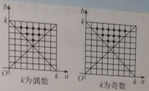
解析：
】
第一步:可以按照取 1,2,3,4张纸币分类;
第二步:(1)若取1张纸币,则有4种选择,即10元、5元、2元、1元各一张;
(2)若取2张纸币,则有6种选择,即10元和5元、10元和2元、10元和1元、5元和2元、
5元和1元、2元和1元:
(3)若取3张纸币,则有4种选择,即10元、5元和2元，10元、5元和1元，10元、2元
和1元,5元、2元和1元;
(4)若取4张纸币,则有1种选择,即10元、5元、2元、1元
第三步:所以可以 组成4＋6＋4＋1=15(种)不同的币值。
则这只青蛙一共有多少种不同的跳法 ?
【

解析：
】
第一步：按第 l次跳到B点或C点开始分类讨论。
第二步：第 1次跳到B点,借助树状图可以发现.跳4次回到A点有3种方法；同理第 1次
跳到C点也有3种方法。
第三步：所以 这只青蛙一共有 6种不同的跳法。
【
解析：
】
第一步：按照三个加数被 3除的余数分类
第二步： (1)3个数都是 3的倍数,有1种情况:
(2)3个数除以 3都余1,有1种情况;
(3)3个数除以 3都余2,有1种情况;
(4)一个数除以 3余1,一个数除以 3余2一个数是 3的倍数,有3×3×3=27( 种)情况。
第三步：所以一共有 1+1+1+27=30( 种)不同取法。
【
解析：
】
第一步：根据第一个数的大小 ,将和大于 10的取法分 为9类；
第二步：列表如下
第一个数 第二个数 有几种
第1类 1 10 1
第2类 2 10，9 2
第3类 3 10，9，8 3
第4类 4 10，9，8，7 4
第5类 5 10，9，8，7，6 5
第6类 6 10，9，8，7 4
第7类 7 10，9，8 3
第8类 8 10，9 2
第9类 9 10 1
第三步：所以共有 1+2+3+4+5+4+3+2+1=25 （种）取法。
数量都足 够多,从中选取3根木条作 为三条边,能围成多少种不同的三角形 ?
【
解析：
】
第一步：按照最 长边为10,
第二步：（ 计算过程）
(1)最长边为10厘米,次长为10,9,8,7,6 厘米的三角形分 别有10,8,6,4,2 个,共计有
10+8+6+4+2=30( 种);
(2)最长边为9厘米的三角形有 9+7+5+3+1=25( 种);
(3)最长边为8厘米的三角形有 8+6+4+2=20( 种);
(4)最长边为7厘米的三角形有 7+5+3+1=16( 种);
(5)最长边为6厘米的三角形有 6+4+2=12( 种);
(6)最长边为5厘米的三角形有 5+3+1=9( 种);
(7)最长边为4厘米的三角形有 4+2=6(种):
(8)最长边为3厘米的三角形有 3+1=4(种);
(9)最长边为2厘米的三角形有 2种；
(10)最长边为1厘米的三角形有 1种。
第三步：所以能 围成30+25+20+16+12+9+6+4+2+1=125( 种)不同的三角形。
加法原理 适用于"分类完成"——做一件事有 k类独立方案，各 类分别有m₁、
m₂、…、mₖ种方法， 总计m₁+m₂+…+m ₖ种。关键是分类要互斥且 穷尽。和乘法原理
对比学习效果更好。
【老师说】
①和乘法原理搞混（分类用加法，分步用乘法）； ②分类时各类之间有重叠； ③遗
漏某类方案。
【易错点提醒】
总结：加法原理适用于 "分类完成"的问题：完成一件事有 k类方案，各 类分别有
n₁、n₂、…、nₖ种方法， 则总共n₁+n₂+…+n ₖ种方法。关 键是准确分类，确保各 类
之间不重叠。
解析：
三十四、乘法原理
方法介绍
生活中常有 这样的情况:完成一件事需要两个步骤,做第1步有m种不同的方法 ,做第2步
有n种不同的方法 ,那么完成 这件事共有 N=m×n种不同的方法 ,这就是乘法原理 。
乘法原理 还可推广到更一般情形 :假设完成一件事需要分成 n个步骤进行做第1步有m1种
不同的方法 ,做第2步有m2种不同的方法， …,做第n步有mn,种不同的方法 ,那么完成 这
件事共有 N=m1×m2×…×m n,种不同的方法。
典型示例
城经过乙城再到丙城共有多少条不同的道路 ?（如图所示）。
想一想:从甲城经过乙城再到丙城需要分几个步骤?每个步骤里各有多少条不同的道路 ?
解-解 方法1:
第一步:设甲城到乙城的 3条道路分 别为a,b,c;乙城到丙城的 5条道路分 别为1,2,3,4,5 。
第二步:那么从甲城到丙城共有 al,a2,a3,a4,a5,bl,b2,b3,b4,b5,cl,c2,c3,c4,c5
共15条不同的道路。
方法2:
第一步:从甲城到丙城分两步 ,第1步从甲城到乙城，有 3条不同的道路 :
第2步从乙城到丙城 ,有6条不同的道路。
第二步:根据乘法原理 ,从甲城经过乙城再到丙城共有 3×5=15( 条)不同的道路 .
和是多少 ?
想一想: 用数字1.2.3,4.5 组成没有重复数字的三位数 ,需要分几个步骤呢?如何更好更快
地求这些三位数的和呢 ?
【解析】
第一步：用数字 1,2.3,4,5 组成没有重复数字的三位数，分三步完成。第 1步,选一个数
字放在百位上，共有 5种选择;第2步，在剩下的 4个数字中 选一个放在十位上 ,有4种选
择;第3步,在剩下的 3个数字中 选一个放在个位上，有 3种选择。
第二步：根据乘法原理有 5×4×3=60( 个)没有重复数字的三位数。
第三步：那么 这60个数的和 该如何来求呢 ?我们可以分类考虑:1.2,3,4 ，5在百位时,各有
12个;1,2,3,4,5 作为十位、个位 时,同样各有 12个。
第四步： 这些数的和 为(1＋2＋3＋4+5)×(100 ＋10＋1)×12=19980, 所以这60个三位数的
和是19980
活量”“握力”“台阶”五个项目的测试，每位同学上、下午各 测试一个项目，且不重复。
若上午不 测“握力”项目，下午不测“台阶”项目，其余项目上、下午都各 测试一人，则
不同的安排方式共有 种。(用数字作答 )
想一想：哪两个 测试项目比较特殊？考虑问题应该 从哪里入手比较方便？
【解析】
第一步：用 A,B,C,D,E 分别表示“身高与体重 ”“立定跳远”“肺活量”“握力”“台阶”
五个项目的测试，上午测A,B,C,E 四个项目，下午测A,B,C,D 四个项目，每位同学上、下
午各测试一个项目，相当于上、下午各有一个 项目搭配给每位同学。
第二步：如果搭配 为ED，则其余为AB,BC,CA 或AC,CB,BA ，有2种情况;
如果搭配 为EA，则其余为AD,BC,CB 或BD,AC,CB 或CD,AB,BC ，有3种情况;
如果搭配 为EB，则其余为AD,BC,CA 或BD,AC,CA 或CD,AC,BA ，有3种情况;
如果搭配 为EC，则其余为AD,BA,CB 或BD,AB,CA 或CD,AB,BA ，有3种情况;
上、下午各有一个 项目搭配总共有2+3×3=11 种情况。
第三步：每一种搭配分配 给4个同学，有4×3×2×1=24 种方案，所以不同的安排方式共
有24×11=264 种
思 维 挑 战
1.☆☆☆☆ 学校升旗 仪式时,思思、想想、小小和方方四名升旗手要排成一列 ,可以有多
少种不同排法 ?
【解析】
方法1:
第一步：用 A,B,C,D来表示思思 ,想想、小小、方方 这4位同学
第二步：将 A,B,C,D 进行 排 列
ABCD,ABDC,ACBD,ACDB,ADBC,ADCB,BACD,BADC,BCAD,BCDA,BDAC,BDCA,CABD,CADB,CBAD,CBD
A,CDAB,CDBA,DABC, DACB,DBAC,DBCA,DCAB,DCBA, 共有2种排法。
方法2:
第一步：四位同学要排成一列可采用分步排 队的方法。第 1步,从人中选1人排在队伍的
首位,有4种选择:第2步,再从剩下 3人中选1人排在队伍的第二位 ,有3种选择;第3步,
从剩下的 2人中选出1人排第三位 ,有2种选择;最后剩余 1人站在队伍的末位，只有 1种
选择。
第二步：根据乘法原理有 4×3×2×1=24 种排法。
2.☆☆☆☆ 如图,有一只小 蚂蚁沿线段从A点依次经过B点、C点到达D点,一共有多少种
路线?
【解析】
第一步： 蚂蚁从A点到达D点,必须经过B点和C点,因此蚂蚁从A点到达D点分三步 进行。
第1步蚂蚁从A点爬到B点,有3条路线:第2步蚂蚁从B点到C点，也有 3条路线;第3
步蚂蚁从C点最终到达D点,同样有3条路线。
第二步：根据乘法原理有 3×3×3=2( 种),所以一共有 27种路线。
3.☆☆☆☆ 用数字1,2,3可以组成若干个没有重复数字的三位数 ,求这些数的和。
【解析】
第一步：用数字 1,2,3组成△代没有重复数字的三位数 ,分三步完成，第 1步,选一个数字
放在百位上 ,共有3种选择;第2步,在剩下的 2个数字中 选一个放在十位上 ,有2种选择:
第3步把剩下的 1个数字放在个位上 ,只有1种选择。
第二步：根据乘法原理 ,数字1,2.3组成没有重复数字的三位数共有 3×2×1=6( 个)
第三步：那么 这6个数的和 ,如何来求呢 ?我们可以分类考虑,1,2,3作为百位时,各有2个
三位数;1,2,3作为十位、个位 时,同样各有2个三位数。
第四步： 这些数的和 为(1+2+3)×(100+10+1)×2=1332, 所以这6个位数的和是 1332。
4.☆☆☆☆☆ 用5799四张数字卡片 ,可以组成多少个不同的四位数 ?(其中9可以倒过来
当6用)。
【解析】
第一步： (1)当两张9都作9用时,可分成三种类型:首位是5的有3个;首位是7的有3个;
首位是9的有3×2×1=6( 个),共计3+3+6=12( 个)。
(2)当两张9都作6用时,同(1)也有12个。
(3)当两张9一个作9用，一个作 6用时,有4×3×2×1=24( 个)
第二步：根据加法原理一共可以 组成12+12+24=48( 个)不同的四位数。
5.☆☆☆☆☆☆ 从数字0,1,2,3,4,5 中任意挑 选出五个数字 组成能被5整除且各个数位
上数字不同的五位数 ,共有多少个 ?
【解析】
第一步：能被 5整除的五位数分 2类情况:第1类,五位数的末位是 0,共有
5×4×3×2=120( 个);第2类,五位数的末位 为5,共有4×4×3×2=96( 个)
第二步：根据加法原理，一共有 120+96=216( 个)不同的五位数。
三十五、容斥原理
方法介绍
在计算“事物A和事物B的总数”时,优化应用“A的个数＋ B的个数－ A、B重叠个数 ”的
计算方法是 容斥原理 ，可以用 韦恩图表示。
运用容斥原理也可以解决有关三个或者三个以上事物的个数 问题，从而起到 优化计数的效
果。
典型示例
题都对的有15人。问有多少位同学两 题都没对?（如图所示）
想一想： 题目中哪一部分是重复的 ?
【解析】
第一步： 发现只答对第一题的人数是答 对第一题的人数减去两 题都答对的人数,即有25-
15=10(人)（如图所示）。
第二步：已知两道 题都没答对的人数是班 级总人数减去至少有一 题答对的人数,即有36-
(10+23)=3( 人)。
想一想从 1到100的自然数中 ,是5或6的倍数共有多少个呢 ?
【解析】
第一步：将 100以内是5或6的倍数的个数相加 ,减去两者最小公倍数的个数即得到所有
倍数的个数，即 16＋20－3=33(个)
第二步： 100减去5或6的所有倍数的个数，得到既不是 5的倍数也不是 6的倍数的个数，
即100－33=67(个)
想一想： 从1到100的自然数中 ,能被2,3或5整除的数有几个呢 ?能同时被2和3，2和5
或者3和5整除的数又有几个呢 ?能同时被2,3和5整除的数呢 ?
【解析】
第一步： 发现被2,3或5整除的数的个数即是能被 2,3,5整除的数的个数减去能同 时被其
中两个数整除的数的个数，再加上同 时被这三个数整除的数的个数；
第二步：所以 满足要求的数个数 为50+33＋20－(16+10＋6)+3=74。
思 维 挑 战
1.☆☆☆☆ 会 50名同学面向老 师站成一排 ,老师先让大家从左至右按 1,2.3,…,49,50 依
次报数,再让报数是4的倍数的同学向后 转,接着又让报数是6的倍数的同学向后 转。请问
现在有多少名学生面向老 师?
【解析】
第一步： 50以内4的倍数的个数有 12个,6的倍数的个数有 8个既是4的倍数又是 6的倍
数共有4个。
第二步：求的是面向老 师的有多少人 :所以还应该加上转了2次的学生人数。所以 现在面
向老师的同学有 50-12-8＋4＋4=38(名)。
3. ☆☆☆☆☆ 有25人参加跳 远达标赛,每人跳三次 ,已知每人至少有一次达到 优秀。第
一次达到 优秀的有10人,第二次达到 优秀的有13人,第三次达到 优秀的有15人，三次都
达到优秀的只有 1人。问恰有两次达到 优秀的有多少人 ?
【解析】
第一步：每次达到 优秀的总人数10+13+15=38( 人)。
第二步：达到 优秀的总人数减去重复 计数的人数 (三次都达 优秀的人数和至少有一次达到
优秀的人数 )即为恰有两次达到 优秀的人数 :38-1×2-25=11(人)
3.☆☆☆☆☆ 54 人中35人俄语,45人懂德语,40人懂日语,50人懂法语。问这四种语言
都懂的至少有多少人 ?
【解析】
第一步： 发现这四种语言都懂的人数即 总人数减去会某种 语言的人数 ,再由总人数减去他
们的人数和 ,即54-[(54-35)+(54-45)+(54-40)＋(54-50)=8(人)。
第二步：所以 这四种语言都懂的至少 8 人。
4.☆☆☆☆☆ 分母是105的最简真分数有多少个 ?
【解析】
第一步： 105是3的倍数或 5的倍数或 7的倍数,因此分子不能是 3的倍数或 5的倍数或 7
的倍数。
第二步：因 为分子需要小于 105,所以104内3的倍数有 34个,5的倍数有 20个,7的倍数
有14个,同时是3和5的倍数的数有 6个,同时是3和7的倍数的数有 4个,同时是5和7
的倍数的数有 2个。
第三步：分母是 105的最简真分数有 104－(34＋20＋14－6－4－2)=48(个)。
5.☆☆☆☆☆☆ 某美术馆有100盏灯,每盏用拉线开关,并标上号码1到100。灯原来都 处
于关闭的状态,第一个管理 员将号码为2的倍数的灯全拉下 ,第二个管理 员将号码为3的倍
数的灯全拉一下 ,第三个管理 员将号码为5的倍数的灯全拉一下。 问最后有几 盏灯是开着
的?
【解析】
第一步： 100以内能被 2,3或5整除的数有 :100÷2=50( 个),100÷3=33( 个)，
100÷5=20( 个)，即共有 50+33+20=103( 个)
第二步：能同 时被2,3和2,5及3.5整除的数分 别有16,10,6个,合计16＋10＋6=32(个),
能同时被2,3和5整除的数有 3个。
第三步：所以亮着灯的数量即 为(50＋33+20)-2×(16+10+6)+4×3=51 ，即有51盏灯开着。
容斥原理 的核心公式： |A∪B| = |A| + |B| - |A∩B|。三个集合 时：|A∪B∪C|
= |A|+|B|+|C| - |A∩B| - |A∩C| - |B∩C| + |A∩B∩C| 。画韦恩图辅助理解最
直观。
【老师说】
①忘记减去重复 计数的部分； ②三个集合 时公式记错；③交集的元素个数算 错。
【易错点提醒】
三十六、抽屉原理
方法介绍
4只鸽子飞进3个鸽巢，必有一个 鸽巢至少飞进2只鸽子;5个苹果放入 4个抽屉，必有一
个抽屉中至少有 2个苹果。 这样的原理称为“鸽巢原理”，也称为“抽屉原理”。在实际
问题中运用抽屉原理的关 键是寻找“抽屉”和“苹果”（如图所示）。
抽屉原理有两条基本原理 :(1)把多于n个苹果放入 n个抽屉，则必有一个抽屉中至少有 2
个苹果;(2)把多于m×n个苹果放入 n个抽屉，则必有一个 抽屉中至少有 m+1个苹果。
典型示例
你知道这是为什么吗?
想一想： 尝试将差为5的数对枚举出来。
【解析】
第一步：把 20个数分成如下 10
组:(1,6),(2,7),(3,8),(4,9),(5,10),(11,16),(12,17),(13.18),(14,19),(15,20), 相当
于有10 个“抽屉”。
第二步：从 1,2,…,20 这20个非零自然数中任取 11个(相当于11个“苹果”),必然有两
个数取自同一 组,这两个数的差是 5。
是完全一 样的。你知道 这是为什么吗?
想一想： 每列的涂色方式有几种可能 ?
【解析】 方法1:
第一步：每列的涂色方式有如下 4种可能,相当于4个“抽屉”。
第二步： 9列小方格相当于 9个“苹果”,因为9>4×2.所以由抽屉原理第2条可知必有 3
列的涂色方式是完全一 样的。
方法2:
第一步：假设结论不成立，那么最多只有两列的涂色方式相同。
第二步：从方法 1可知共有 4种涂色方式，如果每种涂色方式都涂两列，也只能涂 满8列，
与要求给9列小方格涂色矛盾。
第三步：因此 结论成立，必有 3列的涂色方式是完全一 样的。
之间都不认识。
想一想: 可以借助 图形求解,用6个点代表 6个人,如果两人互相 认识,则用蓝色线段连结
两点,否则用黑色线段连结。
【解析】
第一步：原 问题转化为:有6个点(任意三点均不共 线),如图1,把每两点 间的线段染上蓝色
或黑色,无论怎么染,总存在一个三 边同色的三角形。
第二步：把 蓝色、黑色两种 颜色看作2个“抽屉”。考虑从菜一点 (如A点)出发的5条线
段，根据抽屉原理,至少有三条 线段颜色相同，不妨 设线段AC，AD,AE为蓝色,如图2。
第三步： 连结C.D,E的线段中,如果有一条 线段染蓝色,那么它与两条已染 蓝色的线段组成
三边同为蓝色的三角形 ;如果三条 线段全是黑色，那么 CDE是一个三 边同为黑色的三角形。
第四步：所以任意 6个人中， 总有三个人互相 认识，或者互不 认识。
思维挑战
年同月出生的 ,为什么?
【

解析：
】
第一步： 这里10岁和11岁两个年龄段的学生出生的年月共 12×2=24( 个)
第二步： 30>24,根据抽屉原理，则必有至少 2名学生是同年同月出生的。
石子堆中任意 选出四堆,其中必有两堆石子数之差是 3的倍数,你说他的结论对吗 ?为什么?
【

解析：
】
第二步： 这里每种余数看作一个 “抽屉”,4堆石子数看作 “苹果”,根据抽屉原理,必有至
少2堆石子数除以 3的余数相同 ,此时这2堆石子数之差是 3的倍数,故结论正确。

解析：
趣班中的一种、两种或三种。那么至少有 15名学生参加的 兴趣班完全相同 ,为什么?
【
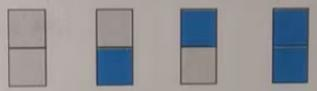
解析：
】
第一步：参加一种 兴趣班的有 3种选法,参加两种 兴趣班的有 3种选法，参加三种 兴趣班
的有】1种选法,共有3＋3＋1=7(种)。
第二步： 100>7×14, 根据抽屉原理第2条基本原理 ,必有14＋1=15名学生参加的 兴趣班完
全相同
个数字,将每个2×2方格内的四个数字之和称为这个2×2方格的“标示数”。能否给出
一种填法 ,使任何两个 标示数均不相同 ,如果能,请举出一例;如果不能 ,请说明理由。
【

解析：
】
第一步： 2×2方格内的数字和最大是 6＋6＋6＋6=24,最小是1＋1+1+1=4, 从4至24共有
21个不同数 值。(即 21个“抽屉”)
第二步：在 6×6方格中共有 25个不的2×2方格,也就有25个“标示数”(即25个“苹
果”)
第三步： 25>21,根据抽屉原理,无论怎么填数 ,必有两个 “标示数”相同。
第四步：所以找不到一种填法 ,使任何两个 “标示数”均不相同。
答案：不能。
的距离不大于 。
【
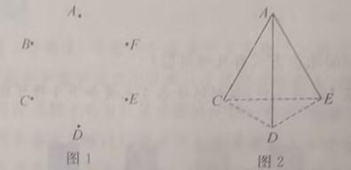
解析：
】
第一步：如 图，把正三角形的每条 边都三等分， 连结各等分点，将 这个三角形分成 9个边
长为的正三方形；
第二步： 10个点放在 9个三角形中，根据抽屉原理，必有 2个点在同一个小三角形内（点
可以在边上）；
第三步： 这两点之间的连线不超过三角形的 边长，即这两点之间的距离不超 过。
抽屉原理的两条基本原理： (1) n+1 个物品放入 n个抽屉，必有1个抽屉≥2个；
(2) m×n+k 个物品放入 n个抽屉（k≥1），必有 1个抽屉≥m+1个。关键是合理构
造"抽屉"，使同一抽屉中的元素具有共同性 质。
【老师说】
①抽屉设计不合理； ②物品数和抽屉数搞混； ③应用第2条原理时m和n搞混。
【易错点提醒】
总结：抽屉原理（鸽巢原理）的核心：把 n+1个物品放入 n个抽屉，必有一个抽
屉至少放2个物品。解题关键是合理构造 "抽屉"和"物品"，抽屉的设计要保证同一
抽屉中的元素具有某种共同性 质。
一、计数类方法对比
| 方法 | 核心思路 | 适用场景 | 关键区别 |
| 枚举法 | 逐一列举所有情况 | 情况较少、容易列举 | 最基础，保证不重不漏
|
| 加法原理 | 分类计数后相加 | 完成一件事有 k类独立方案 | 各类方案互斥，
用加法 |
| 乘法原理 | 分步计数后相乘 | 完成一件事需 k个步骤 | 各步缺一不可，用乘
法 |
| 容斥原理 | 减去重复 计数 | 集合有交集 时 | 用于求并集，避免重复 |
| 抽屉原理 | 利用"必然重叠 " | 证明存在性 | 反向思维，不求具体 值 |
选用口诀：
"情况少用枚举，分类做用加法，分步做用乘法，有重叠用容斥， 证存在用抽屉。"